넥사크로(Nexacro)가
무엇인지부터 정리한다
넥사크로는 (주)투비소프트가 만든 국산 RIA(Rich Internet Application) 개발 플랫폼입니다. 공공기관, 금융권, 대기업 SI 프로젝트의 화면 개발 표준으로 널리 쓰이고 있어서, 전문가 양성 과정을 준비하며 배운 내용을 이 페이지에 순서대로 정리해두려고 합니다.
실무 SI 표준
공공/금융 SI 프로젝트에서 화면 개발 표준 툴로 채택되는 경우가 많아 취업 실무와 바로 연결됩니다.
컴포넌트 기반 개발
Grid, Div, Dataset 등 컴포넌트 단위 개발 방식을 익히면 다른 RIA/UI 프레임워크 이해에도 도움이 됩니다.
데이터셋 중심 구조
화면과 서버 통신을 Dataset이 매개하는 구조라, 데이터 바인딩 개념을 확실히 잡아둘 필요가 있습니다.
넥사크로의 특징
스크립트 + 컴포넌트 결합 구조
화면(Form)에 컴포넌트를 배치하고, 각 컴포넌트의 이벤트에 JavaScript 유사 문법의 스크립트를 붙이는 방식으로 동작을 구현합니다. Nexacro Studio의 스크립트 에디터에서 직접 로직을 작성합니다.
크로스 플랫폼 배포
하나의 소스로 Web, Mobile Web, 하이브리드 앱까지 대응합니다.
서브모듈 화면 분리
화면을 Form 단위로 쪼개고 Submodule로 조합해 재사용성을 높입니다.
학습 로드맵
전문가 양성 과정을 따라가며 잡은 개인 학습 순서입니다.
개발환경 설치 및 프로젝트 생성
Nexacro Studio 설치, XADL 프로젝트 생성, 실행 환경(Server) 설정.
기본 컴포넌트 배치
Div, Static, Edit, Button, Grid 등 기본 컴포넌트와 레이아웃(Fit/Border/Absolute) 이해.
Dataset과 데이터 바인딩
Dataset의 Row/Column 구조, Grid와 바인딩하는 방법 학습.
이벤트 처리와 스크립트
onload, onclick, oncellclick 등 주요 이벤트에 스크립트 작성.
트랜잭션과 서버 통신
transaction() 호출, 서비스 URL 매핑, 콜백 함수 처리.
서브모듈 구성과 배포
화면 분리 설계, 빌드 및 배포 방식 정리.
이 페이지는 강의와 실습을 통해 배운 내용을 개인적으로 복습하기 위해 정리한 학습 노트입니다. 내용은 학습이 진행되는 대로 계속 업데이트할 예정입니다.
Nexacro Studio 실습 정리
컴포넌트, 데이터셋, 이벤트, 트랜잭션 등 실습하면서 익힌 항목들을 정리했습니다. 전체 구조는 마인드맵으로, 세부 사용법은 아코디언으로 나눠서 확인할 수 있습니다.
"자세한 사용법" 탭에 정리된 항목들을 기본 UI / 데이터&스타일 / 레이아웃&구조 / 통신&서버 연동 / 기타&프로젝트 / 모바일&배포 / X-PUSH 일곱 갈래로 묶어 한눈에 보이도록 정리한 지도입니다.
각 항목의 자세한 사용법은 "자세한 사용법" 탭에서 확인하세요.
화면에서 서버로 데이터를 보내고, Controller·Mapper 등을 거쳐 처리한 뒤 다시 화면으로 돌려받는 전체 흐름을 도식화하면 다음과 같다.
화면 (클라이언트)
this.transaction()으로 서비스 URL을 호출하며 요청 Dataset을 함께 전송
Controller
요청을 받아 어떤 서비스 로직으로 넘길지 라우팅
Service / Mapper (SQL 실행)
MyBatis Mapper의 SQL을 실행해 DB를 조회·처리
DB
조회·처리 결과를 Service/Mapper로 반환
화면 (클라이언트) — 응답
처리 결과를 Dataset(PDF/XML)으로 응답받아 화면을 갱신
코드 예시
// 클라이언트: 서비스 호출 this.transaction( "svcMemberList=member.list", "ds_search=input", "ds_member=output", "", this.cb_search, "" );
// 서버: 요청 Dataset을 받아 조회 결과를 응답 Dataset에 채움 public void memberList(PlatformData reqPd, PlatformData resPd) { DataSet dsSearch = reqPd.getDataSet("ds_search"); DataSet dsMember = resPd.newDataSet("ds_member"); // dsSearch 조건으로 SQL 실행 후 dsMember에 결과 매핑 }
서비스에서 Mapper를 호출한 뒤 MyBatis가 XML 속 SQL을 찾아 실행하고 결과를 매핑해 돌려주기까지의 흐름을 도식화하면 다음과 같다.
서비스 코드 — Mapper 호출
예: sqlSession.selectList("selectMemberList", params)
MyBatis — 매퍼 XML 탐색
호출한 id와 일치하는 <select> 구문을 찾음
파라미터 바인딩
#{ } 자리에 전달받은 값이 채워져 최종 SQL 완성
DB 실행
완성된 SQL이 DB에서 실행되어 결과 Row들을 반환
결과 매핑 — 응답
resultType(hashmap 등) 기준으로 컬럼 별칭(alias)에 맞춰 매핑되어 반환
코드 예시
<select id="selectMemberList" resultType="hashmap"> SELECT member_id AS id, member_name AS name, age FROM member WHERE dept_cd = #{deptCd} ORDER BY member_id </select>
클라이언트가 토픽을 등록해 두면, 백엔드가 공급한 메시지를 X-PUSH 서버가 매칭해서 해당 사용자에게만 밀어준다. 전체 흐름을 도식화하면 다음과 같다.
Nexacro Client — 접속과 토픽 등록
connect()로 접속한 뒤 registerTopic() / subscribe()로 받고 싶은 TOPIC을 등록하고 대기
Back End — Message Provider
Provider API로 'TOPIC + 메시지'를 생성해 X-PUSH 서버에 공급(sendPushMessage)
X-PUSH Server — 매칭과 보관
TOPIC TYPE/ID가 맞는 사용자를 찾아 전달. 신뢰성 메시지는 T_MESSAGE·T_USER_MESSAGE에 저장해 두었다가 못 받은 사람에게 다시 보냄
Nexacro Client — 수신과 파싱
X-PUSH Object가 Message Layout(XML) 기준으로 메시지를 해석해 Dataset에 반영
수신 확인 — 신뢰성 메시지만
ackn(엔진 응답)과 responseMessage()(수신 확인)를 보내면 MESSAGE_STATE가 0에서 2로 바뀜
코드 예시
// 백엔드(Provider): 메시지 공급 pushMessage.setActionType(Constants.ACTION_RELI_STRING); // 신뢰성 pushMessage.setTopicType("NOTI"); // 반드시 4byte pushMessage.setTopicId("ALL"); pushMessage.addData("100"); pushMessage.addData("새로운 메시지가 도착했습니다."); provider.sendPushMessage(pushMessage);
<!-- 클라이언트: Message Layout — 필드 개수를 Provider와 맞춰야 함 --> <message type="1000"> <field id="TOPIC_ID" type="string" size="9" key="true"/> <field id="TOPIC_TYPE" type="string" size="255"/> <field id="CODE" type="string" size="255"/> <field id="MSG" type="string" size="255"/> </message>
① Nexacro Studio 시작 화면
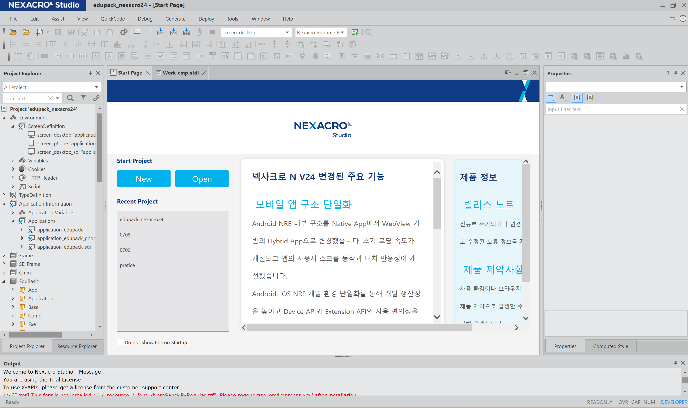
Nexacro Studio를 처음 열면 나오는 화면이다. New 버튼을 누르면 새 프로젝트 만들기 마법사가 시작되고, Open은 이미 있는 프로젝트를 불러온다. 아래 Recent Project 목록에는 최근에 작업한 프로젝트가 표시된다.
② 실제 작업(디자인) 화면 - 전체 구성
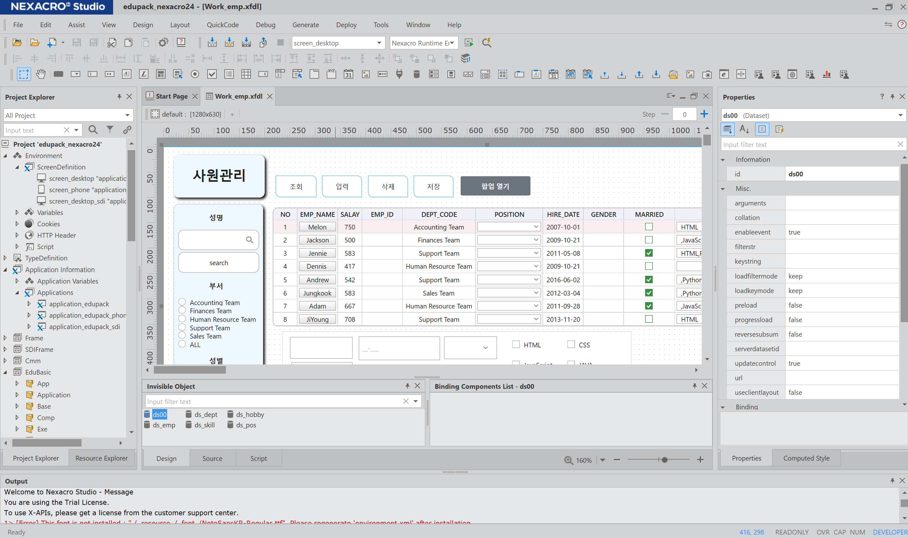
메뉴바 - File·Edit·Debug·Generate 같은 상단 메뉴
툴바 - 저장·실행·배포 같은 기능 아이콘
컴포넌트 팔레트 - 버튼·에디트·그리드 등을 눌러 캔버스에 배치하는 아이콘 모음
Form 탭 - 지금 열려 있는 화면 파일(Work_emp.xfdl) 하나가 곧 Form 하나
디자인 캔버스 - 이 하얀 영역 전체가 Form 화면 그 자체
컴포넌트 예시(Button) - "조회" 버튼처럼 캔버스에 올려놓은 요소 하나하나가 컴포넌트
컴포넌트 예시(Grid) - 표 형태로 데이터를 보여주는 것도 컴포넌트
Project Explorer - 프로젝트에 속한 파일·설정 목록
Properties 패널 - 지금 선택한 컴포넌트의 속성을 편집하는 곳
Invisible Object - Dataset처럼 화면엔 안 보이지만 존재하는 객체 목록
Form 생성과 컴포넌트 배치
화면 한 장을 Form이라 부르고, 툴바에서 컴포넌트를 끌어다 놓으면 배치된다. Properties 패널은 Property·Event·Bindable·Initialize·StringResource 5개 탭이 있는데 실무에서는 앞의 세 개(속성·이벤트·바인딩)를 주로 쓴다.
Properties 패널 툴바 아이콘
컴포넌트를 선택했을 때 Properties 패널 상단 툴바로 목록 정렬 방식을 바꾸거나 5개 탭을 전환한다. 아래는 Edit 컴포넌트를 선택한 예시(파란 테두리 = 현재 켜진 상태).
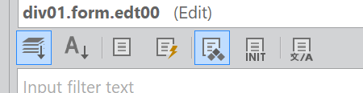
이벤트 핸들러 & 함수 문법
이벤트를 더블클릭하면 핸들러 함수가 자동 생성된다. this.함수명 = function(obj, e) {} 형태(함수 표현식)를 압도적으로 많이 쓰며, this는 그 스크립트가 속한 Form 자신을 가리킨다. obj는 이벤트가 발생한 컴포넌트, e는 부가 정보다. 주의: 자동 생성된 함수 이름을 바꿨다면 반드시 바뀐 이름으로 계속 작성해야 한다.
Event 설정 실습 예시 (onmouseenter)
Event 탭에서 onmouseenter 속성을 더블클릭하면 Script 창에 this.divMain_staLounge_onmouseenter = function(obj, e) {} 뼈대가 자동으로 생겨나고, 그 안에 원하는 동작(여기선 마우스가 올라오면 테두리를 파란색으로 바꾸는 코드)을 작성한다. 아래 화면은 다른 함수도 여러 개 함께 보여서 헷갈리기 쉬우므로, 방금 만든 divMain_staLounge_onmouseenter 함수와 오른쪽 Event 패널의 onmouseenter 속성을 빨간 박스로 표시했다.
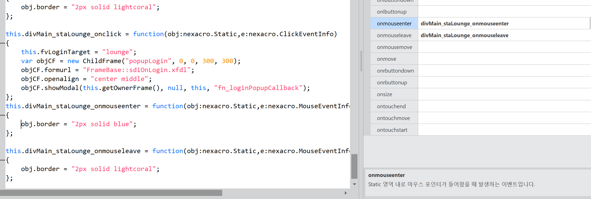
Generate와 실행 방식(WRE/NRE)
화면 소스는 xfdl(XML)이라 브라우저가 바로 못 읽는다. Generate 과정을 거쳐 js로 변환해야 실행되며, 브라우저 위에서 도는 WRE와 별도 런타임으로 디바이스 API까지 쓸 수 있는 NRE 두 방식이 있다. 주의: js → xfdl로 역변환은 불가능하고, 변환된 js는 공통 프레임워크 파일 없이는 단독 실행되지 않는다.
컴포넌트 아이콘 참고표
컴포넌트 팔레트에 있는 아이콘과 이름을 정리했습니다. 흐린 기울임체는 아직 확인 못한 추정 이름이에요.
Div
Combo
Edit
MaskEdit
TextArea
Static
PopupDiv
Radio
CheckBox
ListBox
Grid
Spin
Menu
PopupMenu
Tab
GroupBox
Calendar
ImageViewer
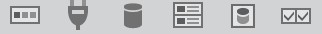
ProgressBar
Plugin
Dataset
ListView
DataObject
CheckBoxSet
MultiCombo
Panel
TextField
MultiLine
TextField
DateField
DateRange
Picker
PopupDate
RangePicker
FileUpload
FileDownload
FileUp
Transfer
FileDown
Transfer
FileDialog
컴포넌트 한 줄 설명
Div : 여러 컴포넌트를 묶는 컨테이너
Combo : 목록에서 하나를 고르는 드롭다운
Edit : 한 줄 텍스트 입력창
MaskEdit : 정해진 형식(마스크)에 맞춰 입력받는 창
TextArea : 여러 줄 입력이 가능한 텍스트창
Static : 수정할 수 없는 텍스트 라벨
PopupDiv : 스크립트로 열어야 나타나는 팝업 영역
Radio : 여러 개 중 하나만 고르는 버튼
CheckBox : 참/거짓을 표시하는 체크박스
ListBox : 목록에서 항목을 고르는 리스트
Grid : 표 형태로 데이터를 보여주는 컴포넌트
Spin : 숫자를 증감시키는 버튼
Menu : 풀다운 메뉴를 구성하는 컴포넌트
PopupMenu : 마우스 우클릭 시 나오는 메뉴
Tab : 화면을 여러 탭으로 나눠 보여줌
GroupBox : 관련 컴포넌트를 테두리로 묶어 보여줌
Calendar : 날짜를 선택하는 달력
ImageViewer : 이미지를 보여주는 컴포넌트
ProgressBar : 진행률을 막대로 보여줌
Plugin : 외부 웹 콘텐츠를 연동하는 컴포넌트
Dataset : 화면 데이터를 담는 보이지 않는 객체
ListView : 카드형 레이아웃으로 목록을 보여줌
DataObject : 데이터를 다루는 보이지 않는 객체
CheckBoxSet : 여러 체크박스를 묶어서 관리
MultiCombo : 콤보에서 여러 개를 선택
Panel : 컴포넌트를 그룹으로 묶는 레이아웃 요소
TextField : 모바일용 한 줄 입력창
MultiLineTextField : 모바일용 여러 줄 입력창
DateField : 모바일에서 날짜 하나를 선택
DateRangePicker : 화면에 상시 펼쳐진 기간 선택 달력
PopupDateRangePicker : 팝업으로 여는 기간 선택 달력
FileUpload : 파일을 서버로 올리는 기능
FileDownload : 서버 파일을 내려받는 기능
FileUpTransfer : 파일 업로드를 처리하는 컴포넌트
FileDownTransfer : 파일 다운로드를 처리하는 컴포넌트
FileDialog : 파일 선택 창을 여는 컴포넌트
여러 컴포넌트를 한 번에 선택했을 때 위치를 맞춰주는 툴바 아이콘들이다.
정렬 · 간격 툴바
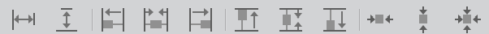
Distribute Horizontally by Specified Value — 지정한 값만큼 가로 간격을 균등 배분
Distribute Vertically by Specified Value — 지정한 값만큼 세로 간격을 균등 배분
Left — 부모 컴포넌트의 왼쪽으로 이동
Center — 부모 컴포넌트의 가로 중앙으로 이동
Right — 부모 컴포넌트의 오른쪽으로 이동
Top — 부모 컴포넌트의 위쪽으로 이동
Middle — 부모 컴포넌트의 세로 중앙으로 이동
Bottom — 부모 컴포넌트의 아래쪽으로 이동
Width — 선택한 컴포넌트들의 너비에 맞춰 크기 조정
Height — 선택한 컴포넌트들의 높이에 맞춰 크기 조정
Both — 선택한 컴포넌트들의 너비·높이 모두에 맞춰 크기 조정
레이어 순서 툴바
Bring to Front — 스택 맨 위로 이동
Send to Back — 스택 맨 아래로 이동
Bring Forward — 한 단계 앞으로 이동
Send Backward — 한 단계 뒤로 이동
Arrange to Tab Order — 탭 순서에 따라 정렬
정렬 · 배분 툴바 (다른 위치)
Left — 왼쪽 정렬
Center — 가로 가운데 정렬
Right — 오른쪽 정렬
Top — 위쪽 정렬
Middle — 세로 가운데 정렬
Bottom — 아래쪽 정렬
Same Width — 선택한 컴포넌트들을 같은 너비로 맞춤
Same Height — 선택한 컴포넌트들을 같은 높이로 맞춤
Same Size — 선택한 컴포넌트들을 같은 크기로 맞춤
Distribute Horizontally — 컴포넌트를 가로로 고르게 배분
Distribute Vertically — 컴포넌트를 세로로 고르게 배분
Dataset을 만드는 두 가지 방법
컬럼과 데이터는 두 가지 방식으로 채울 수 있다. XML 소스를 직접 작성하거나, Dataset Editor에서 표처럼 하나씩 입력하면 된다. 결과는 같으니 편한 쪽을 쓰면 된다.
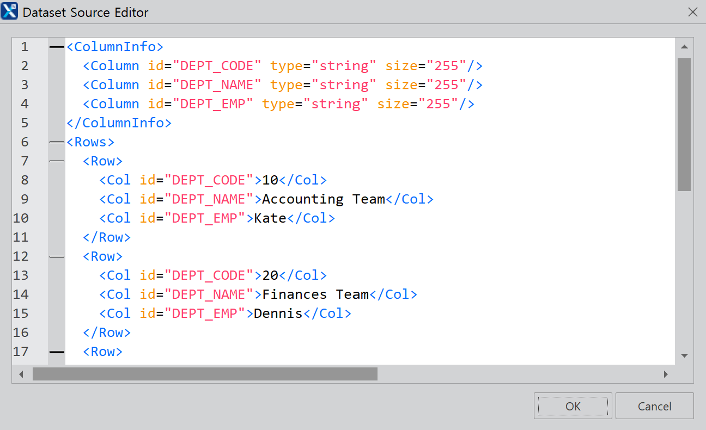
소스 방식: ColumnInfo/Rows를 XML 태그로 직접 작성한다. 코드를 붙여넣거나 대량 데이터를 다룰 때 편하다.
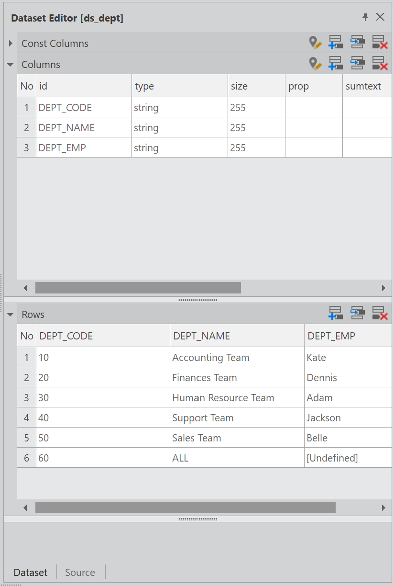
에디터 방식: Columns 표에서 컬럼을 정의하고 Rows 표에 값을 하나씩 입력한다. 아래 Dataset/Source 탭으로 두 화면을 오갈 수 있다.
개념과 바인딩
Dataset은 화면에 보이지 않는 표 형태의 데이터 그릇이다. 그 자체로는 아무것도 안 보이고, Grid 등과 binddataset 속성(또는 셀 단위 바인딩)으로 연결돼야 화면에 표시된다.
데이터 조회/검색
getRowCount()/getColumn(행, 컬럼)으로 기본 조회를 하고, findRow(단일 조건, 첫 매치 행만, 없으면 -1)와 findRowExpr(복합 조건식)로 원하는 행을 찾는다. 조건에 맞는 행을 전부 뽑고 싶으면 extractRows로 인덱스 배열을 한 번에 받는다.
정렬과 필터
keystring에 "S:+컬럼/-컬럼" 형태로 넣으면 정렬된다. filter("조건식")은 데이터를 지우는 게 아니라 화면 표시만 걸러내며, filter("")로 다시 해제한다.
추가·수정·삭제(CRUD)
addRow/insertRow + setColumn으로 행을 추가하고, setColumn으로 값을 고치면(원본값은 getOrgColumn으로 확인 가능) 상태가 바뀐다. deleteRow/deleteMultiRows로 삭제하며, getRowType으로 각 행의 상태(1정상·2추가·4수정·8삭제)를 확인할 수 있다. 주의: 이 모든 조작은 화면 메모리상의 값만 바꾸는 것이라, 서버(DB)에는 별도로 전송해야 반영된다.
초기화·복사·이벤트
reset()은 처음 불러온 상태로 되돌리고, clearData()는 완전히 비운다. copyData/copyRow로 다른 Dataset과 데이터를 주고받을 수 있다. cancolumnchange(변경 직전, false 반환 시 취소 가능)·oncolumnchanged(변경 직후) 이벤트로 값 변경을 감시·검증할 수 있다.
Grid를 Dataset과 연결하는 두 가지 방법
Project Explorer의 Dataset(컬럼)을 Grid 셀 위로 끌어다 놓으면 별도 설정 없이 바로 바인딩된다. 아래 사진에서 동그라미 친 부분이 드래그 중인 Dataset 아이콘(원통 모양)이다 — 이렇게 마우스 커서 옆에 옅게 붙어서 따라오다가, 원하는 셀에 놓는 순간(drop) 바인딩이 끝난다.
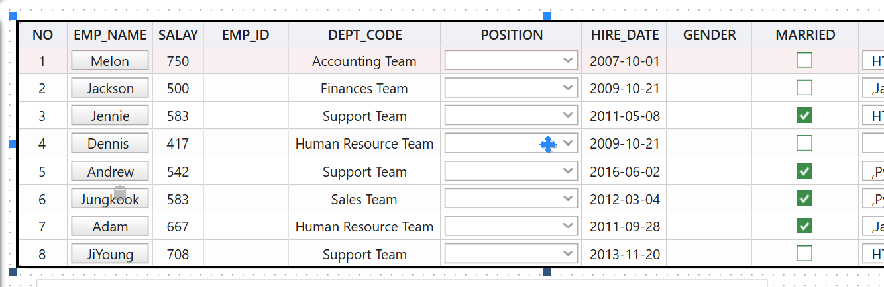
동그라미 부분이 드래그 중인 Dataset 아이콘(원통 모양). 이 상태로 원하는 셀 위에서 손을 놓으면 바인딩 끝.
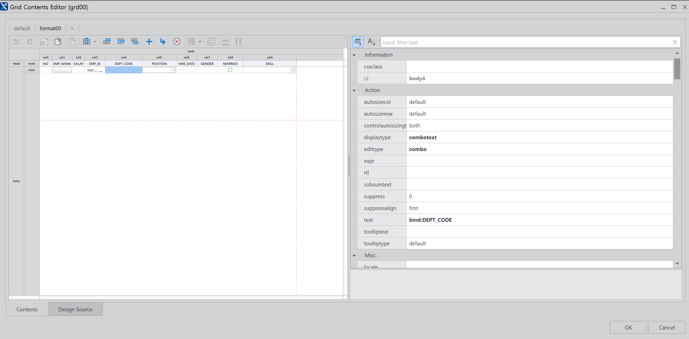
드롭 후 Grid Contents Editor의 Properties를 보면 text가 "bind:DEPT_CODE"로 자동 채워진 걸 확인할 수 있다.
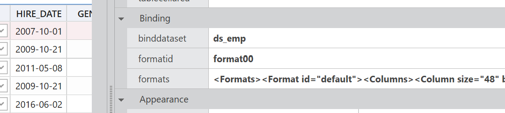
드래그 앤 드롭 대신, Grid를 선택하고 Properties의 Binding 카테고리에서 binddataset 속성에 Dataset 이름(ds_emp)을 직접 입력해도 똑같이 바인딩된다.
셀 클릭 → 다른 컴포넌트 속성 바꾸기
Grid와 다른 컴포넌트(Edit 등)를 같은 Dataset에 함께 바인딩해두면, Grid에서 행을 클릭했을 때 그 컴포넌트의 속성이 자동으로 바뀐다. 아래는 Edit 컴포넌트의 value 속성을 ds_emp의 EMP_NAME으로 바인딩해 둔 예시다.
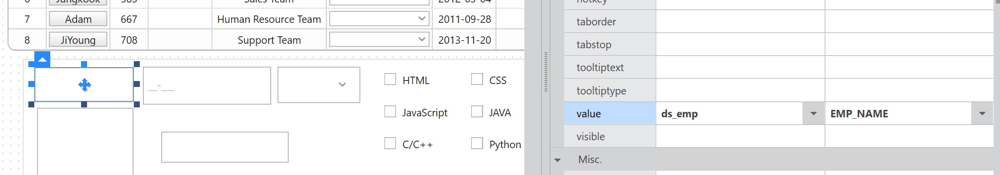
Edit 컴포넌트를 선택하고 Properties의 value 속성을 ds_emp Dataset의 EMP_NAME 컬럼으로 바인딩한다.
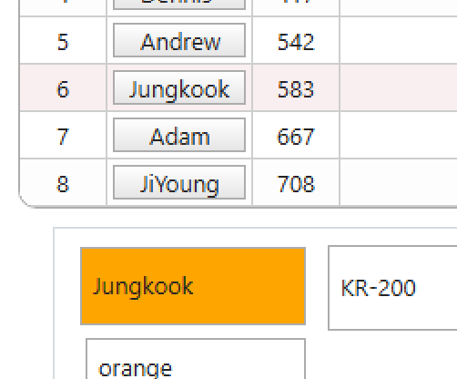
실행 결과: Grid에서 "Jungkook" 행을 클릭하면 바인딩된 Edit 컴포넌트에도 "Jungkook"이 자동으로 표시된다(배경색은 MEMO 컬럼 값과 바인딩된 예시).
Cell text 3가지 방식
하드코딩 텍스트, "bind::컬럼"으로 Dataset 값 바인딩, "expr::연산식"(currow 등 함수·계산식)까지 세 가지로 셀 내용을 정할 수 있다. 주의: Grid의 expression 안에서 comp는 Grid 자기 자신이므로, Form에 정의된 함수를 부르려면 comp.parent로 한 단계 올라가야 한다.
displaytype / edittype
보여주는 방식과 편집하는 방식을 따로 지정한다(예: combotext는 클릭했을 때만 콤보로 바뀌고, combocontrol은 항상 콤보 모양). 콤보·체크박스·날짜·마스크 등 다양한 셀 타입을 조합해 쓸 수 있다.
실행 중 컬럼 이동·너비 조절
사용자가 실행 중에 마우스로 컬럼 순서를 바꾸거나 너비를 조정할 수 있게 하려면 cellmovingtype(컬럼 이동 여부)과 cellsizingtype(컬럼 너비 조절 여부)을 사용한다.
Tree형 Grid
displaytype을 treeitemcontrol, edittype을 tree로 두고 treelevel에 레벨 컬럼을 bind하면 폴더 구조처럼 펼쳐진다. 주의: 트리는 화면 Row 순서와 Dataset Row 순서가 달라질 수 있어, 변환에는 getTreeRow/getTreeStatus/setTreeStatus를 써야 한다.
그룹핑과 소계
keystring에 "G:-컬럼"을 넣으면 같은 값끼리 묶고 소계 행이 자동 생성된다. 소계 계산 방식(SUM/COUNT/AVG 등)은 컬럼의 prop 속성으로 바꿀 수 있는데, 스크립트로 바꿨다면 updateSortGroup()을 호출해야 화면에 반영된다.
셀 병합·서프레스·기타
Merge Cells는 셀을 완전히 하나로 합치고, Having child cells는 겉만 합치고 내부 subcell을 유지한다. suppress는 반복되는 값을 자동으로 병합 표시해준다. getCellProperty/setCellProperty로 실행 중 셀 속성을 읽고 바꿀 수 있고, 페이징은 서버에서 offset/개수만큼 끊어 받아온 뒤 공통 함수로 페이지 버튼을 그려주는 방식으로 구현한다.
suppress·suppressalign — 반복값 묶어서 보여주기
suppress에 번호를 지정하면 그 컬럼에서 값이 같은 셀들이 하나로 묶여 표시된다. suppressalign은 묶인 셀 안에서 텍스트가 위(first)·가운데(center)·아래(last) 중 어디에 놓일지 정한다. 아래는 부서 컬럼에 suppress=1, suppressalign="first"를 지정한 Properties 패널이다(마우스를 올리면 확대된다).
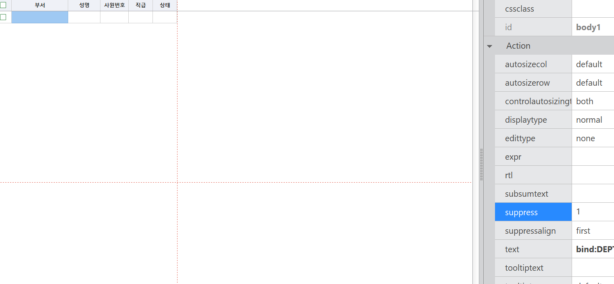
이렇게 설정하면 같은 부서 값이 이어지는 행들에서는 부서명이 매 행마다 반복되지 않고, 그 구간의 첫 행에만 한 번 표시된다 — 예를 들어 "Education Team"·"Support Team"처럼 여러 행에 걸친 부서명이 한 번만 보이고, 그 아래 소계 행(합계 금액 등)과 함께 깔끔하게 정리되어 보인다.
디자인 화면에서 셀 병합·추가·삭제하기
디자인 화면에서 셀을 선택하고 마우스 오른쪽 버튼을 누르면 뜨는 메뉴로도 같은 작업을 할 수 있다. Add Column으로 열을, Add Head/Body/Summary Row로 헤더·본문·소계 행을 추가하고, Add·Insert·Delete로 셀 자체를 더하거나 지운다. 여러 셀을 선택한 뒤 Merge Cells로 합치거나 Split Cell로 다시 나눌 수 있고, Same Width·Same Height로 선택한 셀들의 크기를 맞출 수도 있다.
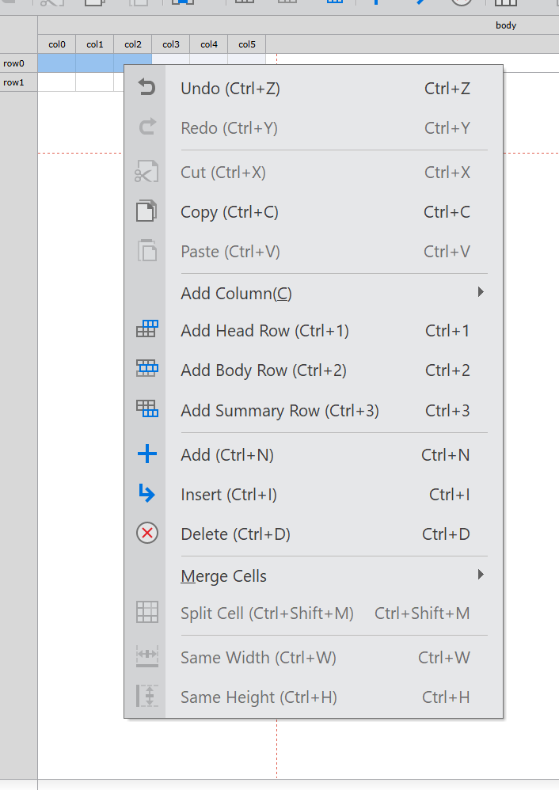
Grid 페이징(Paging) 처리
목록을 페이지 단위로 나눠 보여주는 페이징은 서버에서 구간만 받아오는 부분과, 받아온 데이터에 맞춰 그리드 크기·페이지 버튼을 그리는 부분으로 나뉜다.
변수 fvRowCount(페이지당 건수)·fvPage(현재 페이지)·fvOffset(조회 시작 위치)·fvTotalCnt(전체 건수)·fvPageCnt(표시할 페이지 버튼 수)를 미리 선언
gfnTransaction()으로 cnt=fvRowCount, offset=fvOffset을 실어 서버에 조회 요청
콜백 안에서 getRealRowFullSize("head"/"body")로 헤더·바디 실제 높이를 구해 grid.height = 헤더+바디+2로 재조정 → 데이터 건수만큼 스크롤 없이 딱 맞는 높이
fnSetPage() → fnCreatePage(콜백함수명, 전체건수, 페이지당건수, 현재페이지, 표시할버튼수) — 페이지 번호 버튼들을 자동으로 생성
페이지 번호 클릭 시 fnPageCall(nPage, nOffset)이 fvPage·fvOffset을 갱신하고 다시 조회 함수를 호출
dateformat / editformat으로 날짜 형식 지정
Calendar 컴포넌트는 dateformat으로 화면에 보여줄 형식을, editformat으로 실제 입력·편집할 때 쓸 형식을 각각 지정한다. yyyy(연도)·MM(월)·dd(일) 같은 형식 문자를 조합해 원하는 표기로 자유롭게 바꿀 수 있다.
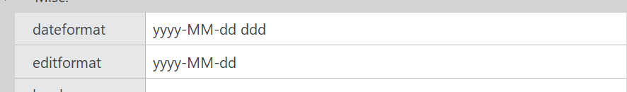
형식 문자 한 줄 설명
yyyy : 연도 4자리
MM : 월 2자리
dd : 일 2자리
ddd : 요일
예: dateformat을 "yyyy-MM-dd ddd"로 두면 "2026-07-25 토"처럼 요일까지 표시되고, editformat을 "yyyy-MM-dd"로 두면 실제 입력값은 요일 없이 저장된다.
codecolumn / datacolumn / innerdataset
Combo는 목록 데이터를 innerdataset에 지정한 Dataset에서 가져온다. 그 Dataset의 어느 컬럼을 화면에 보여줄지는 datacolumn이, 실제 선택된 값(코드)으로 저장할 컬럼은 codecolumn이 정한다. 즉 화면엔 datacolumn 값이 보이지만, 실제로 컴포넌트에 저장되는 값은 codecolumn 값이다.
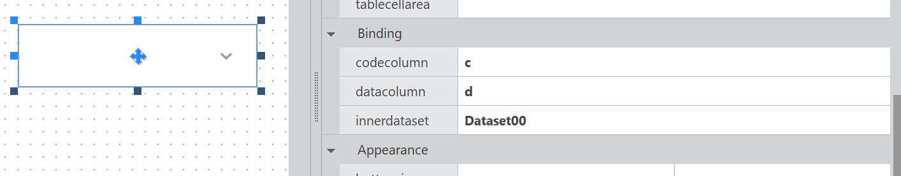
Combo를 선택하고 Properties의 Binding 카테고리에서 codecolumn(c)·datacolumn(d)·innerdataset(Dataset00)을 지정한 예시.
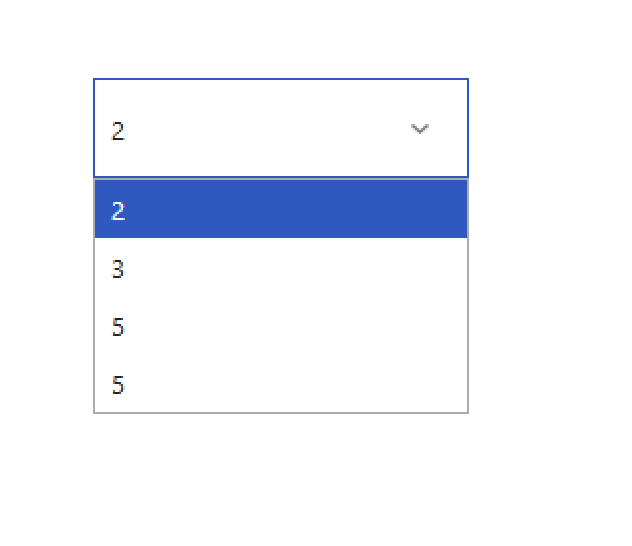
실행 결과: 드롭다운을 펼치면 innerdataset(Dataset00)의 datacolumn 값들이 목록으로 나열되고, 그중 하나를 고르면 같은 행의 codecolumn 값이 실제 선택값으로 저장된다.
세 컴포넌트 모두 텍스트를 입력받는다는 점은 같지만 용도가 다르다.
Edit
숫자·영문·한글을 모두 입력할 수 있는 가장 기본적인 한 줄 입력창.
MaskEdit
기본값으로는 숫자만 입력할 수 있고, format 속성으로 정해진 형태(마스크)를 지정하면 그 형태에 맞는 텍스트만 입력할 수 있다.
TextArea
Edit처럼 숫자·영문·한글을 모두 입력할 수 있지만, 여러 줄을 입력할 수 있다는 점이 다르다.
format으로 입력 형식 강제하기 (MaskEdit)
예를 들어 format을 "######-#######"로 지정하면 주민등록번호처럼 앞 6자리-뒤 7자리 숫자만 "010101-0000000" 형태로 입력되도록 강제할 수 있고, 이 형식에 맞지 않게 입력하면 오류가 표시된다.
displaynulltext — 입력 전 안내 문구
로그인 화면의 "아이디를 입력하세요" 문구처럼, 값을 입력하기 전에는 안내 문구가 보이다가 사용자가 실제로 입력하면 문구가 사라지도록 해주는 속성이다.
maskedittype — 숫자/문자 전환
MaskEdit은 maskedittype 속성으로 입력 형식을 number(숫자, 기본값, 우측 정렬)에서 string(문자, 좌측 정렬)으로 바꿀 수 있으며, 입력값 정렬 방향이 타입에 따라 자동으로 달라진다.
Theme을 쓰는 이유
넥사크로는 컴포넌트 하나하나에 개별적으로 스타일을 만들지 않고, Theme을 프로젝트 전체에 적용하는 방식을 쓴다. 그래서 화면마다·컴포넌트마다 매번 스타일을 새로 지정해주는 번거로움이 줄어든다.
두 종류의 Theme: NexacroTheme vs Theme
Resource Explorer에는 두 종류의 테마가 있다. NexacroTheme(확장자 .xtheme)은 style과 image가 하나로 합쳐진 압축 형태라 삭제·수정 같은 편집이 불가능하다. Theme은 style과 image가 분리되어 있어 자유롭게 편집할 수 있다.
NexacroTheme .xtheme
style과 image가 하나로 합쳐져 있어 편집 불가(삭제·수정 불가)
Theme
style·image가 분리되어 있어 자유롭게 편집 가능
Theme의 XCSS에서 자주 쓰는 스타일 속성들이다. 자세한 문법은 필요할 때 하나씩 찾아 쓰면 되고, 여기서는 "이런 속성이 있다"는 것만 정리한다.
border : 테두리 설정
background : 배경 설정
bg-image : 배경 이미지 설정
linear-gradient : 그라데이션
font : 폰트 설정
box-shadow : 그림자 설정
Timer — 일정 시간마다 반복 실행
시계나 카운트다운처럼 일정 주기로 반복되는 로직은 Form > Event > ontimer를 더블클릭해 스크립트를 작성한다. 관련 메소드는 다음과 같다.
this.setTimer(id, ms) — 지정한 주기(ms)마다 ontimer 이벤트를 반복 발생시킴 (예: 1000 → 1초마다)
e.timerid — ontimer 안에서 어느 타이머가 발생시켰는지 구분 (여러 타이머 동시 운용 가능)
this.killTimer(id) — 반복 정지
응용 · 카운트다운 — 남은 초를 변수에 저장해두고 ontimer마다 1씩 줄이며 Math.floor(초/60) + ":" + (초%60)로 계산해 Static의 text에 표시
응용 · PopupDiv를 일정 시간(예: 2초) 뒤 자동으로 닫히게 처리
background와 Inner Form
Div 컴포넌트의 background 속성을 빨간색이나 파란색으로 바꿔도 실제 화면에는 그 색이 나타나지 않는 경우가 있다. 그 이유는 Div 위에 눈에 보이지 않는 "Inner Form"이라는 내부 폼이 하나 더 겹쳐져 있기 때문으로, Div 안에 Button 같은 컴포넌트를 추가하면 실제로는 Div 바로 위가 아니라 이 Inner Form 위에 배치되는 구조다. 그래서 Div 자체에 배경 스타일을 제대로 주려면 Properties에서 직접 background를 바꾸는 대신, cssclass(예: .Div.div_blue { background: #0000ff; })로 클래스를 만들어 그 클래스를 Div 컴포넌트의 cssclass 속성에 연결해줘야 한다. 클래스만 만들어 놓고 컴포넌트에 연결하지 않으면 스타일이 적용되지 않는다는 점도 주의해야 한다.
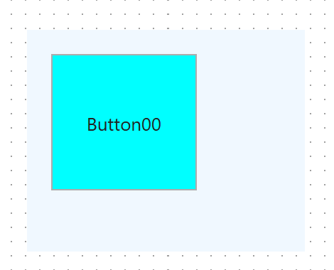
옅은 파란 배경 전체가 cssclass로 스타일을 준 Div 영역이고, 그 안의 청록색 Button00은 Div 위의 Inner Form에 올라간 컴포넌트다.
Div 안에 컴포넌트를 넣으면 스크립트도 한 단계 더 들어간다
Div 위에 놓은 컴포넌트는 Inner Form 위에 배치되기 때문에, 코드에서 접근할 때는 div00.form.컴포넌트id처럼 한 단계 더 들어가야 한다. 이벤트를 더블클릭해 자동 생성되는 핸들러 함수 이름에도 같은 원리로 Div 이름이 한 단계 더 붙는다. 예를 들어 Div00 안의 Button00을 더블클릭해 onclick 핸들러를 만들면, Form에 바로 놓은 컴포넌트와 달리 함수 이름이 this.Div00_Button00_onclick = function(obj, e) {}처럼 "Div이름_컴포넌트이름" 형태로 생성된다.
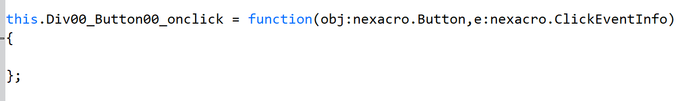
Div에 url로 다른 화면 가지고 오기
Div는 url 속성에 다른 화면(xfdl) 경로를 지정해두면, 그 화면의 내용을 그대로 가져와 Div 안에 끼워 넣어 보여준다. 아래는 Div00의 url을 "Work::Work_formsev.xfdl"로 지정해, 그 화면의 "팝업창" 내용이 빨간 테두리로 표시된 Div 영역 안에 그대로 로드된 예시다.
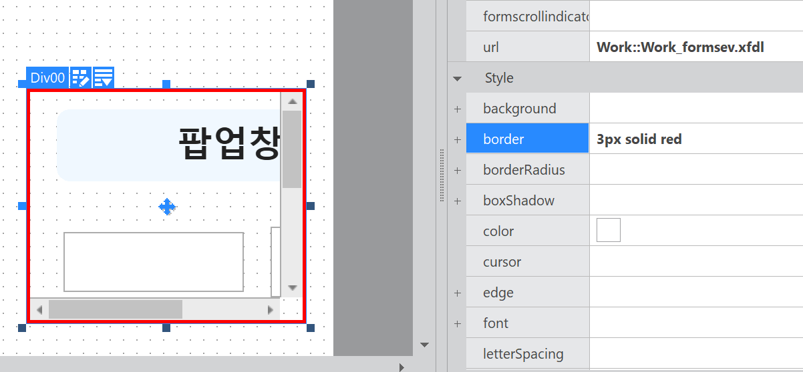
넥사크로에는 "새 창"이 없다
브라우저의 새 창(window.open)과 달리 넥사크로에는 새 창을 띄우는 기능 자체가 없다. 그래서 팝업이 필요할 때는 스크립트로 ChildFrame을 만들어 화면 위에 겹쳐 띄우는 방식으로 구현한다.
Modal vs Modaless
Modal
팝업이 떠 있는 동안 mainframe(부모 화면)을 사용할 수 없다. 실무에서 주로 사용하는 방식.
Modaless
부모 화면을 계속 조작할 수 있는 대신, 좌표를 직접 계산해서 띄워야 한다.
Modal 팝업 예시 — 여는 스크립트
버튼을 클릭하면 ChildFrame을 만들어 Modal로 띄우는 스크립트다. edt00·edt01에 입력된 값을 param 딕셔너리로 묶어 팝업에 함께 넘긴다.
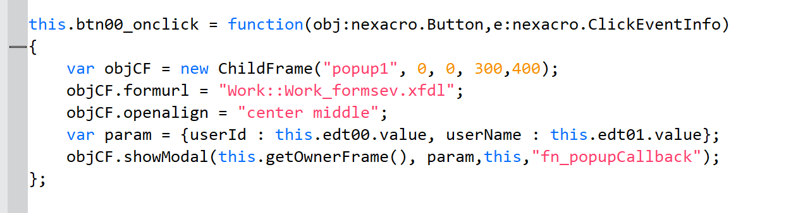
실행 결과
Modal 팝업이 떠 있는 동안에는 뒤의 mainframe이 어둡게 처리되며 조작할 수 없다.
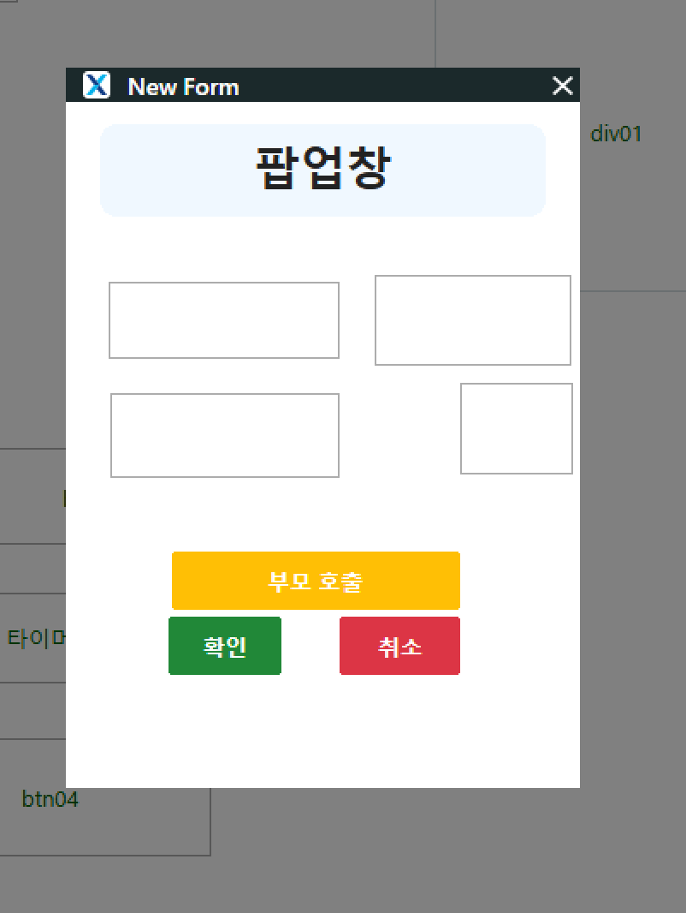
ChildFrame 생성자 — id·top·left·width·height
부모 화면에서 new ChildFrame(id, top, left, width, height) 형태로 자식 프레임(팝업)을 만든다. 매개변수는 왼쪽부터 순서대로 id·top·left·width·height다.
new ChildFrame("popup1", 0, 0, 300, 400)
id — "popup1"
top — 0
left — 0
width — 300
height — 400
formurl·openalign — 어떤 화면을, 어디에
만들어진 ChildFrame에 formurl로 팝업창에 띄울 화면(xfdl) 파일을 연결하고, openalign으로 팝업창이 나타날 위치("center middle" 등)를 지정한다.
showModal() — 부모 → 자식으로 데이터 전달
팝업을 실제로 띄우는 메소드는 showModal()이며, 매개변수는 순서대로 다음과 같다.
objCF.showModal(this.getOwnerFrame(), param, this, "fn_popupCallback")
this.getOwnerFrame() — 팝업을 띄우는 부모 프레임
부모 → 자식으로 넘길 인자. 이 예시에서는 {userId: this.edt00.value, userName: this.edt01.value}처럼 딕셔너리로 묶어서 전달했다.
콜백 함수를 가진 객체 (보통 this)
팝업이 닫힌 뒤 실행할 콜백 함수 이름 — "fn_popupCallback"
close() — 자식 → 부모로 데이터 되돌려주기
반대로 팝업(자식) 화면에서 입력한 값을 부모 화면으로 되돌려줘야 할 때도 있다. 팝업 쪽 버튼에서 edt00·edt01 값을 읽어 ":"로 이어붙인 뒤 this.close(...)로 팝업을 닫으면서 값을 함께 넘긴다. close()에는 문자열 하나만 담을 수 있어서, 값이 여러 개면 이렇게 구분자로 이어붙여 보내야 한다.
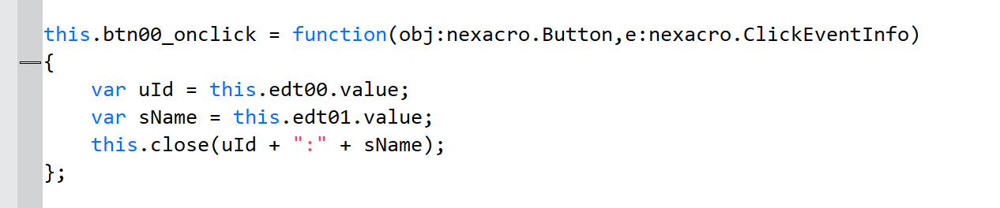
콜백 함수 — 되돌아온 값 받기
부모 화면의 콜백 함수는 sPopupId(어떤 팝업이 닫혔는지)와 sReturn(close()로 넘어온 값)을 받는다. sPopupId로 어느 팝업인지 확인하고, sReturn을 split(":")으로 다시 나눠 각 입력창에 채워 넣는다. 주의: 통신은 비동기라 showModal() 바로 다음 줄에서 반환값을 읽으면 안 되고, 반드시 이 콜백 함수 안에서 처리해야 한다.
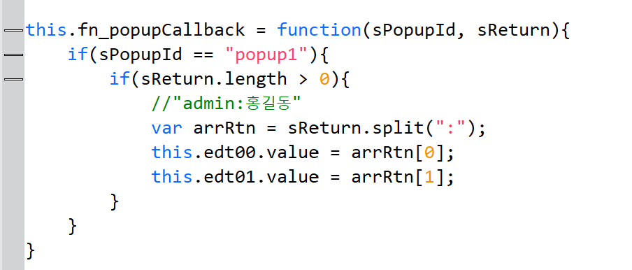
Modaless 팝업을 위한 준비 — Application 구조
넥사크로 화면은 Application > MainFrame > Form 순서로 구성된다. Modaless 팝업은 Modal과 달리 좌표를 직접 계산해서 띄워야 하는데, 그러려면 화면 크기의 기준이 되는 mainframe에 접근해야 하고, 그러려면 그 위 단계인 Application을 먼저 가져와야 한다.
Modaless 팝업 스크립트
nexacro.getApplication()으로 Application을 가져오고, mainframe.width/height로 메인 창의 크기를 읽는다. (전체 너비/높이 − 팝업 너비/높이)를 각각 2로 나누면 팝업을 정중앙에 둘 왼쪽(left)·위(top) 좌표가 나온다. 이렇게 구한 좌표는 화면 안에서의 상대 좌표이므로, system.clientToScreenX()/clientToScreenY()로 모니터 화면 기준 좌표로 바꿔줘야 실제로 화면에 배치할 수 있다.
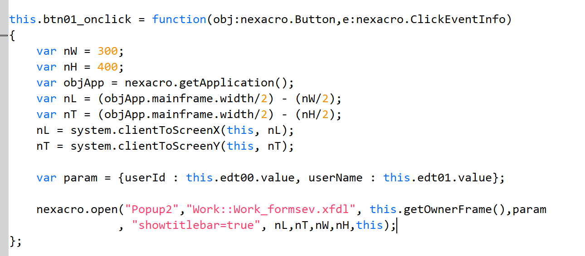
주의: 이 예시의 nT 계산에는 objApp.mainframe.width가 두 번 쓰였다 — 세로 좌표이니 원래는 height여야 할 자리로 보이니, 실제로 쓸 때는 확인해보는 게 좋다.
nexacro.open() — Modaless 팝업 열기
Modal의 showModal()과 달리, Modaless 팝업은 nexacro.open()으로 연다. 매개변수는 왼쪽부터 순서대로 popup id·경로·부모 프레임·전달할 데이터·옵션 문자열·left·top·width·height·opener다.
nexacro.open("Popup2", "Work::Work_formsev.xfdl", this.getOwnerFrame(), param, "showtitlebar=true", nL, nT, nW, nH, this)
popup id — "Popup2"
경로 — 띄울 화면(xfdl)
부모 프레임
전달할 데이터(param)
옵션 문자열
left(nL)
top(nT)
width(nW)
height(nH)
opener(this)
실행 결과 — mainframe이 어두워지지 않는다
Modal과 달리 Modaless 팝업은 떠 있는 동안에도 뒤쪽 mainframe이 어두워지지 않고, 계속 조작할 수 있다.
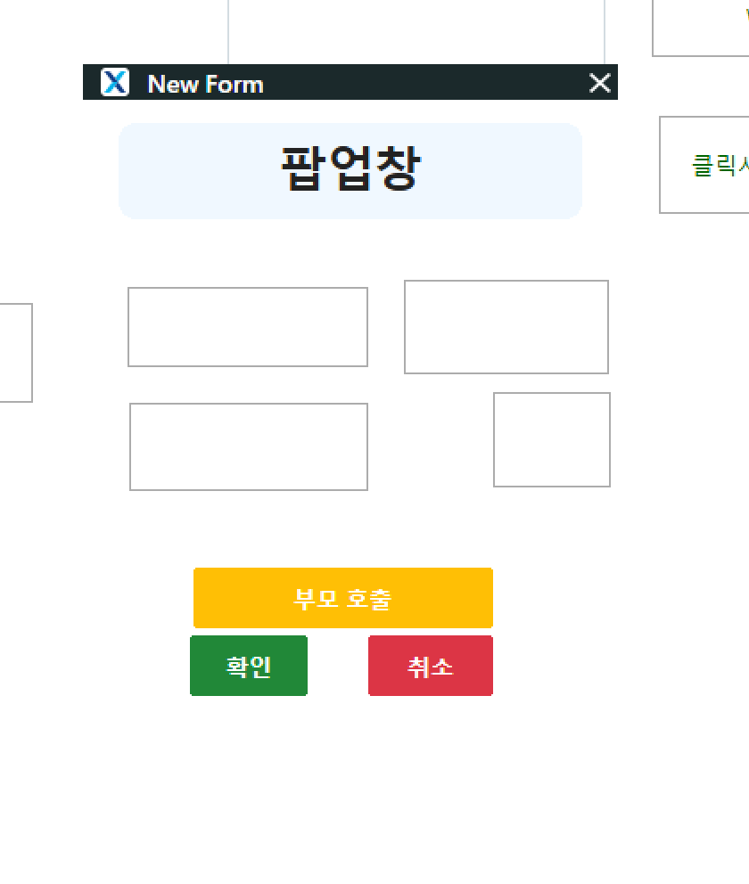
tabjustify — 탭 너비
true로 두면 탭 버튼 너비가 전체 폭에 맞춰 균등하게 늘어나고, false(기본값)면 각 탭 이름의 글자 수만큼만 너비를 차지한다.
탭 페이지 추가·제거 — MDI에서 여러 업무 화면 관리(tabMdi)
MDI 방식에서 여러 업무 화면을 탭으로 전환하며 쓸 수 있게 해주는 것이 Tab 컴포넌트(tabMdi)다.
tabMdi.removeTabpage(0) — form_onload에서 디자인 시 기본으로 있던 0번째 빈 탭 제거
tabMdi.insertTabpage(id, -1, "", 텍스트) — 새 화면을 열 때 탭 추가 (인자 순서: 탭 ID · 삽입 위치(-1=맨 끝) · Form URL(비워두고 ChildFrame이 담당) · 탭에 표시할 텍스트)
tabMdi_onchanged — 탭 전환 시 발생. obj.tabpages[e.postindex].name으로 선택된 탭의 ID를 구해 avFrameWork[id].setFocus()로 해당 ChildFrame을 앞으로 가져온다
탭 닫기 버튼(showextrabutton)
showextrabutton = true — 탭버튼 오른쪽에 'x' 닫기 버튼을 표시
tabMdi_onextrabuttonclick — 'x' 클릭 시 발생. 해당 ChildFrame의 form.close()로 화면을 닫고 obj.removeTabpage(e.index)로 탭도 함께 제거
정렬 버튼(fnArrange)
최대화·수평정렬·수직정렬·전체닫기 버튼을 누르면 버튼 id로 분기해서, 최대화/전체닫기는 직접 처리하고 나머지는 avFrameWork.arrange(정렬종류)로 넥사크로가 기본 제공하는 정렬 기능을 그대로 사용한다.
Frame 계열: VFrameSet·HFrameSet·FrameSet
하나의 애플리케이션을 상단 메뉴·좌측 메뉴·본문 작업 영역 등 여러 영역으로 나눌 때 Frame 계열 컴포넌트를 쓴다. VFrameSet은 하위 프레임을 위아래(세로)로, HFrameSet은 좌우(가로)로 배치하고, FrameSet은 좌표로 위치·크기를 직접 지정해 자유롭게 배치한다.
ChildFrame과 form 연결
화면 안에 실제 업무 화면을 띄우려면 ChildFrame 프레임 컴포넌트를 만들고, 그 위에 실제 form(.xfdl)을 연결해야 비로소 화면 내용이 보인다.
SDI vs MDI
애플리케이션 화면 구성 방식은 크게 두 가지다. SDI(Single Document Interface)는 한 번에 하나의 업무 화면만 표시하고, MDI(Multiple Document Interface)는 여러 업무 화면을 탭이나 창 형태로 동시에 열어둔다. 실무·실습에서는 MDI를 더 많이 쓴다.
Application_Desktop과 Add Frame
애플리케이션 레벨 화면인 Application_Desktop에서 이 Frame 배치 구조를 설정한다. mainframe에서 마우스 우클릭 후 "Add Frame"을 선택하면 하위 프레임을 추가할 수 있다.
separatesize 예시
각 FrameSet의 separatesize 속성은 하위 자식 프레임들의 크기(또는 비율)를 지정한다. 아래는 VFrameSet의 자식이 frameLogin·frameTop·HFrameSet 세 개일 때 separatesize를 "0,50,*"로 설정한 예시로, frameLogin은 0px(안 보임), frameTop은 50px 고정, HFrameSet은 나머지 공간을 모두 차지하도록 배치된다.
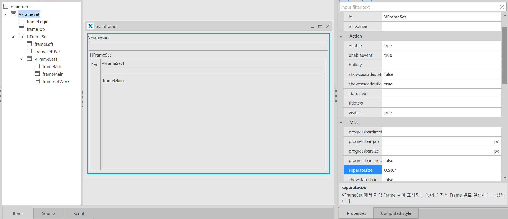
상단/좌측 메뉴 구성
상단 메뉴(frameTop)는 메뉴 정보를 담은 Dataset을 읽어 Button을 코드로 동적 생성하는 방식으로 만든다. 좌측 메뉴(frameLeft)에서 항목을 더블클릭하면 ChildFrame과 공통 틀 화면(frameWork)을 통해 실제 업무 화면을 불러오고, 동시에 frameMdi에 탭도 함께 추가된다.
반응형 로그인 화면
보이지 않는 기준 컴포넌트(가로·세로 50%)를 하나 두고, 로그인 박스를 그 기준점에서 자기 크기의 절반만큼 음수 오프셋으로 배치하면 창 크기가 바뀌어도 항상 정중앙을 유지한다.
참고
이 구조는 실무 프로젝트의 전체 골격을 짜는 설계 패턴이라 처음엔 복잡해 보일 수 있지만, "메뉴 Dataset → 동적 버튼/탭 생성 → ChildFrame으로 업무 화면 로드"라는 한 가지 흐름만 이해하면 대부분 응용할 수 있다.
Timer
setTimer(id, 주기)로 일정 간격마다 ontimer 이벤트를 반복 발생시키고, killTimer(id)로 멈춘다. 여러 타이머를 동시에 쓸 땐 e.timerid로 구분한다.
컴포넌트 동적 생성/제거
화면 디자인 시점에 미리 배치하지 않고, 스크립트로 실행 중에 컴포넌트를 새로 만들어 넣는 것을 동적 생성이라고 한다. 아래 스크립트에서 파란 박스가 생성 버튼, 빨간 박스가 제거 버튼의 코드다.
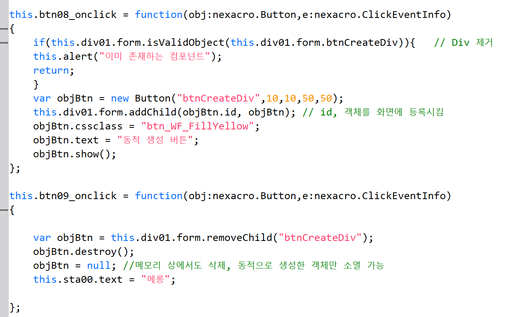
new Button(id, x, y, width, height) — 컴포넌트 객체 생성
this.addChild(id, obj) — Form의 자식으로 등록
obj.show() — 이 호출까지 있어야 실제 화면에 나타남
this.div02.form.addChild(...) — Div 내부(Inner Form)에도 같은 방식으로 동적 생성 가능
isValidObject(id) — 이미 존재하는지 먼저 확인(같은 id 중복 생성 방지)
obj.addEventHandler("onclick", 함수, this) — 동적 컴포넌트에 이벤트 핸들러 연결
this.removeChild(id) — Form에서 떼어냄 (동적 생성한 컴포넌트에만 사용)
obj.destroy() → obj = null — 완전히 파괴하고 변수를 비워 메모리 참조를 남기지 않음
실행 결과: 버튼을 클릭하면 노란 버튼이 새로 생겨나고, 다시 클릭하면 사라진다.
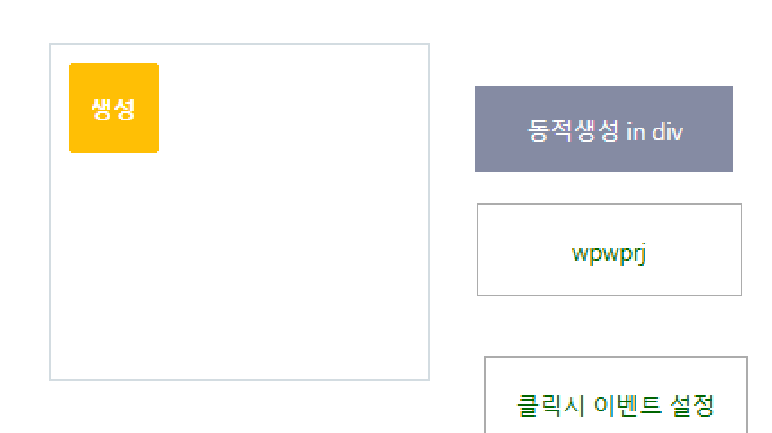
Global Function(gfn)
알림창, 팝업 열기, 공통 코드 조회처럼 여러 화면에서 반복되는 로직을 gfn 접두어 전역 함수(gfnAlert, gfnOpenPopup, gfnGetCommonCode 등)로 한 번만 만들어 공용으로 쓴다. 화면마다 같은 로직을 새로 짤 필요가 없고 문구·검증 규칙도 일관되게 유지된다.
WebView 연동
화면 안에 웹페이지를 띄울 땐 구형 WebBrowser 대신 WebView(Chromium 기반)를 쓴다. callScript()로 넥사크로에서 HTML 함수를 실행시키고, HTML 쪽은 FireUserNotify()로 데이터를 보내면 넥사크로의 onusernotify 이벤트에서 e.userdata로 받는다.
즐겨찾기(★) 처리
공통 틀 화면(frameWork)에 붙는 별 버튼으로, 전역 Dataset(gdsMyMenu)에 메뉴를 추가·삭제하는 방식으로 즐겨찾기를 구현한다.
this.getOwnerFrame().form의 param — 상위 ChildFrame이 전달해둔 값(menuid 등)을 꺼내 어떤 메뉴인지 확인
gdsMyMenu.findRow("MENU_ID", id) — 이미 즐겨찾기로 등록된 메뉴인지 확인, 등록되어 있으면 별 버튼 cssclass를 채워진 별로 표시
별 버튼 클릭 시 이미 즐겨찾기면 findRow 후 deleteRow()로 해제, 아니면 gdsMyMenu.addRow() + copyRow(...)로 전체 메뉴(gdsMenu)의 원본 행을 복사해 등록
Static 기준점으로 중앙 정렬
보이지 않는 기준 Static(예: staBase) 하나를 두고, 실제 내용을 그 기준점 대비 음수 오프셋으로 배치하는 방식이다.
기준 Static(staBase)의 left·top을 0으로, width·height를 화면의 50%로 설정 → 오른쪽 아래 꼭짓점이 항상 화면 정중앙
실제 내용 컴포넌트(예: divLogin, width 300·height 355)의 left·top을 staBase를 기준(anchor)으로 각각 -150·-177(자기 크기의 절반만큼 음수)로 지정
staBase의 visible = false로 감춰서, 사용자 눈에는 내용 컴포넌트만 화면 크기와 상관없이 항상 정중앙에 있는 것처럼 보이게 함
form_onsize — 화면을 브라우저 중앙에 배치
Static 기준점 방식 대신, Form이 로드될 때 스크립트로 좌표를 직접 계산해 이동시키는 방식도 있다.
nLeft = (전체 화면 가로 폭 ÷ 2) − (div.getOffsetWidth() ÷ 2) — 왼쪽 여백을 계산
nLeft가 0 이하(화면이 div보다 좁음)면 0에, 아니면 계산된 위치에 setOffsetLeft(nLeft)로 이동
form_onload에서 이 계산 함수(form_onsize)를 호출해, 화면이 처음 뜰 때부터 중앙 정렬이 적용되게 함
일반 함수 vs 화살표 함수의 this
일반 function은 그 함수를 호출한 대상이 this가 되고, 화살표 함수(=>)는 정의된 시점의 this를 그대로 물려받는다. 콜백으로 함수를 넘길 때 this가 예상과 달라지는 버그를 막으려면 이 차이를 꼭 기억해야 한다.
FileDialog / FileUpTransfer
파일 업로드/다운로드를 구현할 때 쓰는 대표 컴포넌트다. 둘 다 화면에 안 보이는(Invisible) 컴포넌트로, 파일 선택창을 띄우거나 파일을 서버로 전송하는 기능만 담당한다.
파일 선택 → 목록에 담기
버튼을 클릭하면 선택창을 여는 스크립트(파란 박스)와, 선택이 끝난 뒤 파일을 처리하는 스크립트(빨간 박스)다.
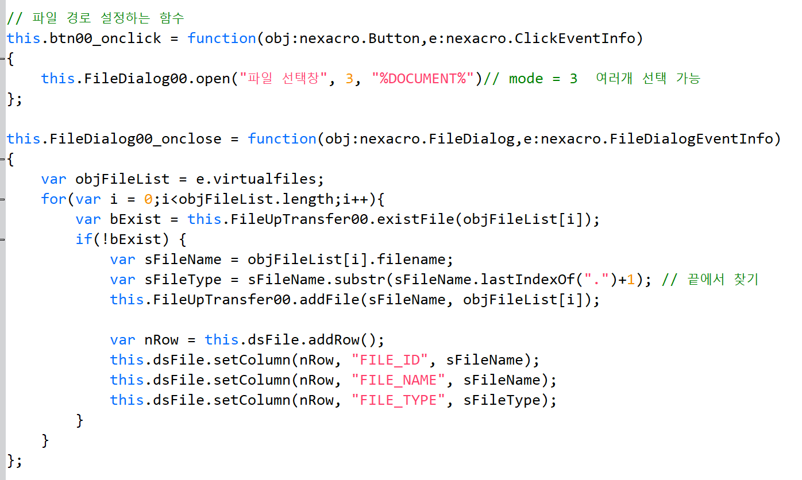
FileDialog00.open("제목", 필터타입숫자, "%DOCUMENT%") — 파일 선택 대화상자를 띄움
FileDialog00_onclose — 선택이 끝나면 발생, e.virtualfiles에 선택된 파일 목록이 담겨 온다
FileUpTransfer00.existFile(파일) — 이미 등록된 파일인지 검사(중복 방지)
FileUpTransfer00.addFile(파일명, 파일객체) — 업로드 대기열에 추가
dsFile.addRow() + setColumn(...) — 화면에 보여줄 파일목록 Dataset(dsFile)에 파일명·확장자 등을 기록
실제 업로드 실행
FileUpTransfer00.setPostData(키, 값) — 서버에 함께 보낼 추가 데이터 지정 (예: 저장할 폴더 경로)
FileUpTransfer00.upload(서버URL) — 실제 업로드를 실행
FileUpTransfer00_onsuccess — 업로드 성공 시 발생, e.datasets[0]로 서버가 반환한 실제 저장 파일 정보를 받아 dsFile을 갱신
Grid에 드래그 앤 드롭
Grid에 파일을 마우스로 직접 끌어다 놓는 것(drag & drop)도 grd00_ondrop 이벤트의 e.filelist로 처리할 수 있다.
실전 예시 — 프로필 이미지 선택·업로드
회원가입 화면의 "프로필 등록" 버튼처럼, FileDialog·FileUpTransfer를 조합해 이미지 미리보기까지 구현하는 실전 패턴이다.
선택된 파일명을 정규식 /\.(jpe?g|png|gif)$/i로 검사해 이미지 파일인지 확인
미리보기는 실행 환경에 따라 다르다 — NRE(넥사크로 런타임)에서는 로컬 경로(file://)를 그대로 사용하고, 웹 브라우저에서는 FileReader로 파일을 Base64 문자열로 변환해 표시
FileUpTransfer00.clearFileList() — 새로 고를 때 이전에 등록된 파일을 먼저 비움
"회원가입 완료" 같은 제출 버튼을 누르는 시점에 upload() 호출 — setPostData()로 저장할 하위 폴더 같은 추가 값도 함께 전달
onsuccess에서 서버가 반환한 파일 ID를 받아, 이어서 회원 정보 저장 절차를 진행
WebBrowser vs WebView
넥사크로에서 화면 안에 웹 페이지를 띄우는 컴포넌트는 두 가지다. 요즘은 Internet Explorer 자체를 더 이상 지원하지 않는 추세라, 실무·실습에서는 WebBrowser보다 WebView를 쓴다.
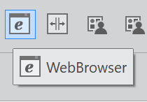
WebBrowser
Internet Explorer 엔진 기반. IE 자체가 더 이상 지원되지 않아 요즘은 잘 쓰지 않는다.
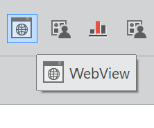
WebView
Microsoft Edge(Chromium 기반) 엔진. 실무·실습에서 주로 쓰는 최신 컴포넌트.
url 속성과 gfnGetServerUrl()
WebView의 url 속성에 주소를 지정하면 그 페이지가 화면 안에 로드된다. 서버 주소를 문자열로 직접 적지 않고, gfnGetServerUrl() 공통 함수를 호출해 현재 실행 환경(localhost·서버 IP·실제 배포 주소 등)에 맞는 웹 루트 경로를 동적으로 가져온 뒤, 그 뒤에 필요한 하위 경로를 이어붙여 최종 URL을 완성한다. 이렇게 하면 개발/테스트/운영 환경이 바뀌어도 소스 코드를 수정하지 않고 주소를 맞출 수 있다.
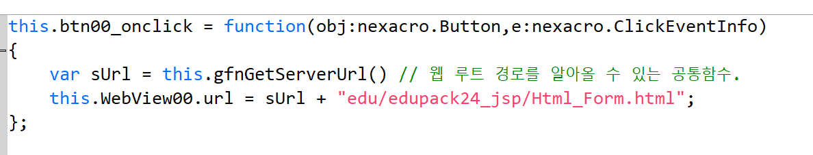
실행 결과
지정한 url의 웹 페이지가 WebView 컴포넌트 안에 그대로 로드된다.
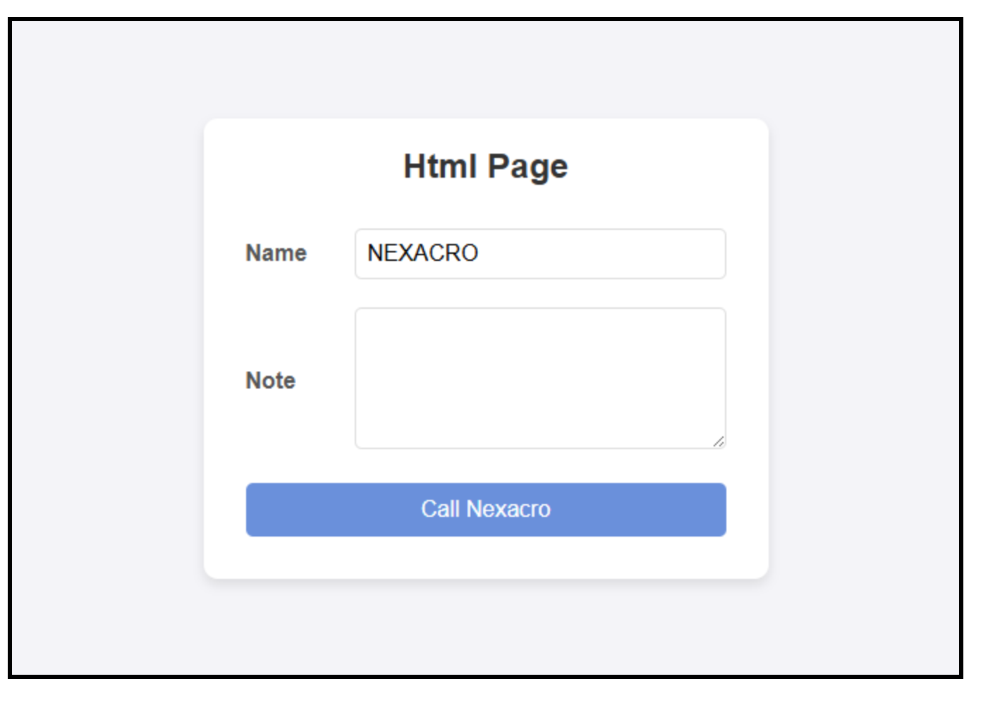
서버 통신 개요
Web Server는 정적 자원을, WAS는 DB 조회 같은 동적 처리를 담당한다. 자바 쪽 조회 결과(RS, ResultSet)는 넥사크로가 바로 못 읽으므로 Dataset(DS) 형태로 변환하는 중간 모듈을 거쳐야 화면에 바인딩할 수 있다. 서버 쪽 데이터는 보통 VO·Map·List 형태인데, 이걸 넥사크로 Dataset과 서로 변환해주는 역할을 UiAdapter가 맡는다 — 값뿐 아니라 행의 추가/수정/삭제 상태까지 함께 변환한다.
transaction()의 6개 인자
순서대로 ① 요청 식별 이름, ② 서버 서비스 경로(URL), ③ 서버로 보낼 Dataset, ④ 서버에서 받아올 Dataset 매핑("화면Dataset=서버Dataset"), ⑤ 낱개 변수 파라미터, ⑥ 완료 후 실행할 콜백 함수명이다. 조회 결과 건수 등은 이 콜백 함수 안에서 확인해야 한다.
this.transaction("svcCheckUserId", "SvcUrl::user/checkUserId.do", "", "", "userId=" + nexacro.wrapQuote(userId), "fn_callback")
⑤ 파라미터 문자열과 공백 문제
파라미터는 "key=값" 형태를 공백으로 이어붙여 전달하는데, 값 자체에 공백이 있으면(예: "홍 길동"처럼 띄어쓰기 있는 이름) 그 공백 지점에서 값이 잘려 "홍"까지만 전달되는 문제가 생긴다. 주의: nexacro.wrapQuote()로 값을 감싸야 공백이 있어도 안전하게 전달된다.
Before
"empName=" + sEmpName
After
"empName=" + nexacro.wrapQuote(sEmpName)
실제 조회 함수 예시 — deptCode는 그냥 붙이고, empName은 wrapQuote로 감싼 모습이다.
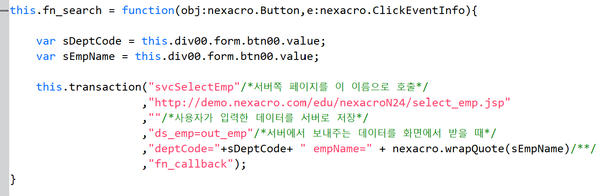
③ Dataset 전송 범위: :u vs :a
Dataset을 서버로 보낼 때 뒤에 붙이는 :u는 변경된(추가·수정·삭제) 데이터만, :a는 전체 데이터를 보낸다. 전송량을 줄이려면 :u를 주로 쓰며, 여러 Dataset을 동시에 보낼 땐 공백으로 나열한다(예: "in_emp=ds_emp in_aa=ds_dept"). 수정·삭제된 행은 바뀐 값뿐 아니라 수정 전 원래 값도 함께 보내지는데, 서버가 그 원래 값을 기준으로 WHERE절을 만들어야 정확히 그 행을 찾아 처리할 수 있기 때문이다.
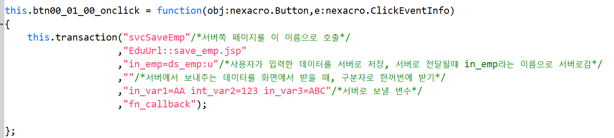
② URL을 별칭으로 관리(TypeDefinition-Services)
서버 주소를 코드에 직접 쓰지 않고 "EduUrl" 같은 PrefixID로 등록해두면 "EduUrl::save_emp.jsp"처럼 짧게 쓸 수 있다. 환경(개발/운영)이 바뀌어도 이 등록 값 한 곳만 고치면 돼서 유지보수가 쉬워진다. TypeDefinition-Services에는 두 종류가 있다: 넥사크로가 기본 제공하는 Resource Service(theme, imagerc, font 등 리소스 경로)와, 개발자가 직접 추가하는 User Service(EduUrl, SvcUrl 같은 서버 API 별칭).
⑥ Sync/Async와 콜백의 중요성
넥사크로 기본 통신 방식은 비동기(Async)다. transaction() 호출 직후 다음 줄에서 바로 결과를 읽으면 아직 서버 응답이 도착하기 전이라, 방금 조회한 실제 값이 아니라 화면에 미리 넣어둔 샘플 값 등 엉뚱한 값을 보게 된다. 반드시 지정한 콜백 함수 안에서 결과를 처리해야 한다. 아래는 실제 콜백 함수 예시 — errCd가 음수면 실패로 보고 바로 알림 후 종료하고, 정상이면 svcId로 어떤 요청의 응답인지 구분해 분기 처리한다(빨간 박스 = 실패 처리 구간).
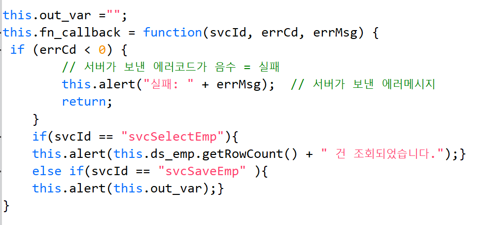
CORS와 NRE
브라우저는 동일 출처 정책(CORS)으로 화면 주소와 다른 도메인의 서버 요청을 막을 수 있다. 별도 실행기인 NRE로 실행하면 이 제약 없이 통신할 수 있어, 개발 중 테스트 때 자주 활용한다.
gfnTransaction() — 공통 래퍼 함수
transaction()과 인자 순서가 동일한 프로젝트 공통 함수로, 실무에서는 transaction()을 직접 쓰기보다 이렇게 감싸둔 공통 함수를 더 많이 쓴다.
this.gfnTransaction("svcGetNewBook", "user/getNewBook.do", "", "dsNewBook=dsNewBook", "", "fnCallback")
3계층 구조와 MVC
서버는 Spring 기반 전자정부 프레임워크의 MVC 패턴을 따르며, 요청은 Controller → Service → Mapper → DB 순으로 내려가고 결과는 반대로 올라온다. 계층을 나누면 화면·로직·SQL이 서로 분리되어 유지보수가 쉬워진다.
Controller 작성 요소
@RequestMapping으로 요청 경로를 지정하고, 낱개 값은 @ParamVariable, Dataset 전체는 @ParamDataSet으로 받는다.
@RequestMapping(value="edu/getEmpList.do")
public NexacroResult getEmpList(
@ParamVariable(name="deptCode") String deptCode) { ... }
NexacroResult로 응답 구성하기
Controller의 반환 타입은 NexacroResult다. 여기에 addDataSet()으로 목록 데이터를, addVariable()로 단일 값을 담아 반환하면 화면의 transaction 콜백에서 지정한 이름 그대로 받아볼 수 있다.
NexacroResult rst = new NexacroResult();
rst.addDataSet("outEmp", resultData); // Dataset(목록) 응답
rst.addVariable("fvTotalCnt", totalCount); // 단일 값 응답
return rst;
실제 UserController 예시 — 파라미터 없이 조회해서 dsList란 이름의 Dataset으로 응답한다.
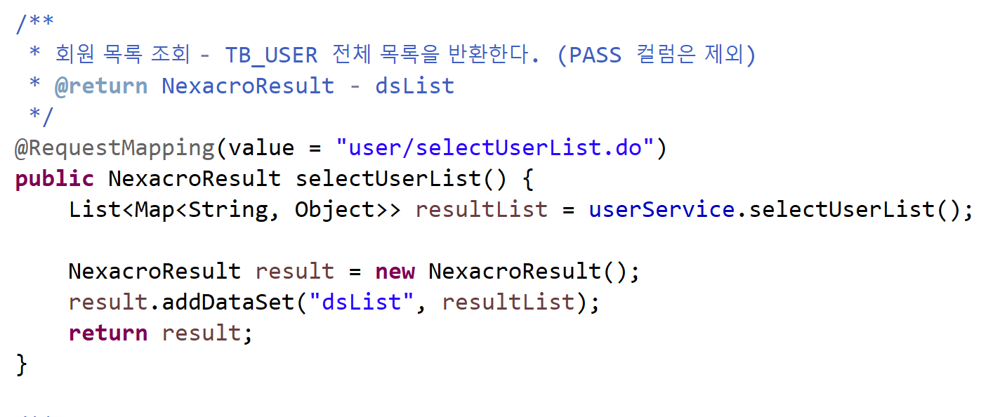
Service/Mapper 위임 구조
Controller는 직접 DB에 접근하지 않고 Service에 위임한다. Service는 인터페이스(예: NexaEduService)와 구현체(NexaEduServiceImpl)로 나뉘고, 구현체는 다시 Mapper 인터페이스(NexaEduMapper)를 호출한다. Mapper 인터페이스는 메서드 시그니처만 갖고 있고 실제 SQL은 짝을 이루는 Mapper.xml 파일에 있다. 아래는 회원 목록 조회(selectUserList) 하나가 Service 인터페이스 → ServiceImpl → Mapper 인터페이스 → Mapper.xml SQL까지 그대로 이름을 이어가며 내려가는 실제 예시다.
① UserService (인터페이스)
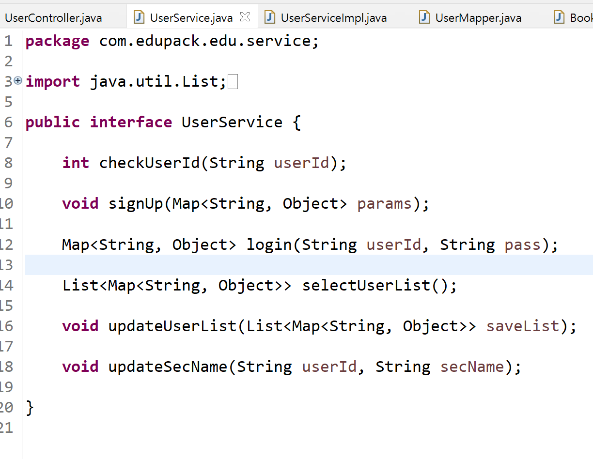
② UserServiceImpl (구현체) — Mapper로 그대로 위임
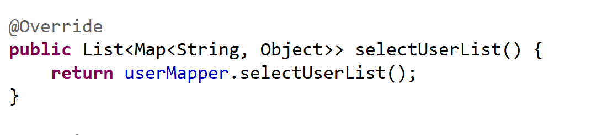
③ UserMapper (인터페이스)
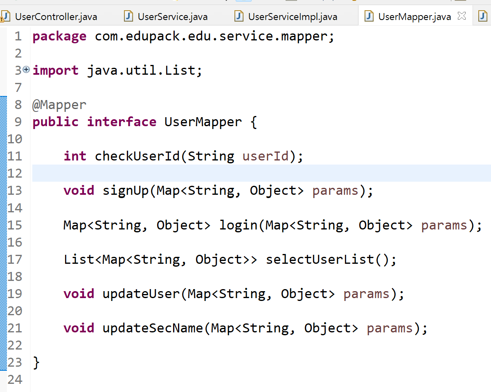
④ Mapper.xml — 실제 SQL
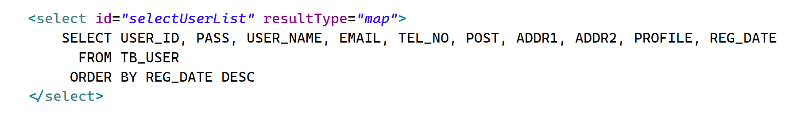
RowType 분기 처리
저장 시에는 Dataset의 각 행에 자동 기록된 RowType(추가/수정/삭제 상태)을 확인해 insert/update/delete 메서드를 각각 분기 호출한다. 여러 상태의 행이 한 번에 섞여 들어와도 이 분기로 한 번의 저장 요청에서 모두 처리된다.
switch (row.get("DataSetRowType")) {
case DataSet.ROW_TYPE_INSERTED: mapper.insertEmp(row); break;
case DataSet.ROW_TYPE_UPDATED: mapper.updateEmp(row); break;
case DataSet.ROW_TYPE_DELETED: mapper.deleteEmp(row); break;
}
파일 업로드 서버 처리
서버 Controller는 MultipartHttpServletRequest로 업로드 요청을 받는다. 지정된 저장 폴더가 없으면 File.mkdirs()로 새로 만들고, 같은 이름의 파일이 이미 있으면 날짜·시간을 붙인 새 파일명을 만들어 덮어쓰기를 막는다. transferTo()로 실제 디스크에 저장한 뒤, 저장된 파일 정보(FILE_ID·FILE_NAME·FILE_SIZE)를 새 행으로 담은 Dataset을 응답으로 돌려준다.
FileUpTransfer 클라이언트 흐름
화면 쪽에서는 FileUpTransfer00.upload(...)를 호출해 업로드를 실행하고, 성공하면 발생하는 onsuccess 이벤트의 e.datasets[0]에서 서버가 돌려준 파일 정보를 꺼낸다. 이 콜백 안에서 바로 다음 단계(예: 회원가입 완료 처리 함수)를 이어서 호출하는 체이닝 패턴이 자주 쓰인다 — 업로드할 파일이 없으면 이 단계를 건너뛰고 바로 다음 처리로 넘어가면 된다.
페이징 데이터 조회 흐름
화면에서 cnt(한 페이지 개수)·offset(시작 위치)을 파라미터로 보내면 서버가 그 구간만 조회해서 돌려준다. 전체 흐름은 화면 transaction(cnt, offset) → Controller → Service → Mapper → SQL 실행 → 결과가 역순으로 반환 → Controller가 NexacroResult에 목록+총건수를 담아 응답 → 콜백이 그리드·페이지 버튼을 갱신 순서다. 예를 들어 페이지 크기 5, offset=20이면 21~25번째 행만 조회해온다. 페이지 번호가 바뀔 때마다 offset만 다시 계산해서 재요청한다.
아이디 중복 체크 처리 패턴
화면이 입력된 아이디를 보내면 서버는 COUNT 쿼리로 결과를 fvIdCnt에 담아 돌려준다. 개수가 0보다 크면 errorCode 100 + "이미 등록된 아이디입니다" 메시지를, 0이면 errorCode 200(사용 가능)을 반환하는 식으로 에러코드 자체를 결과 판별에 활용하는 패턴이다.
로그인과 전역 Dataset(gdsUser)
로그인 성공 시 서버가 돌려준 사용자 정보를 gdsUser 같은 애플리케이션 전역 Dataset에 채워두면, 이후 어느 화면에서든 다시 서버에 묻지 않고 바로 꺼내 쓸 수 있다.
this.transaction("svcLoginUser", "SvcUrl::user/LoginUser.do", "", "gdsUser=gdsUser", "userId=" + ... + " pass=" + ..., "fn_callback")
로그인/회원 정보를 담는 실제 tb_user 테이블 구조 — USER_ID가 PK이고 PASS·USER_NAME·EMAIL 등은 대부분 NULL 허용이다.
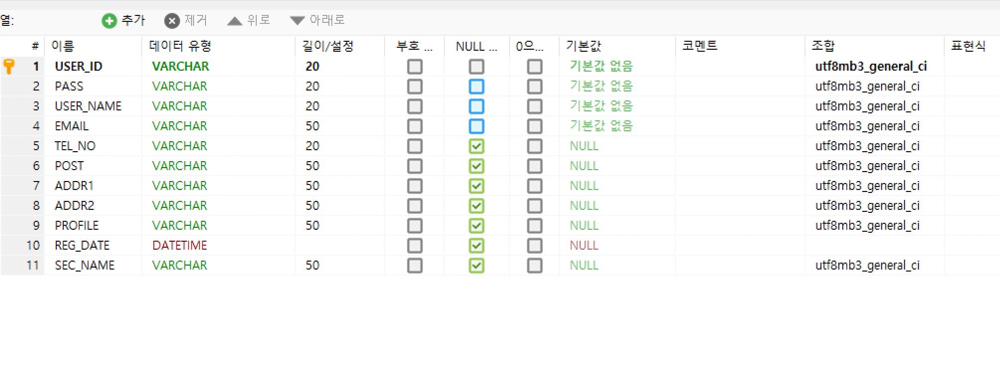
파라미터 형태별 처리
문자열 하나만 넘어올 땐 이름이 없으므로 _parameter 예약어로 받아야 한다. 조건이 여러 개면 VO 클래스(예: NexaEduVo)로 묶어 parameterType="com.edupack.edu.vo.NexaEduVo"로 지정하고 필드명 그대로(#{deptCode}, #{empName}) 쓴다. Dataset을 그대로 넘길 땐 parameterType="map"으로 받아 Dataset 컬럼명(COL_DEPT 등)을 그대로 조건식에 쓴다.
#{ } 바인딩과 조건절 자동 처리
#{파라미터명}은 값을 SQL 인젝션 없이 안전하게 채워 넣는 문법이다. <if> 태그로 조건절 자체를 생략 가능하게 만들 수 있고, <where> 태그를 쓰면 조건이 하나라도 참일 때만 WHERE를 붙이고 불필요한 첫 AND도 자동으로 지워준다. 조건이 두 개 이상일 때 VO + <where>/<if>를 함께 쓰는 예시:
<select id="getEmpListParam2" parameterType="com.edupack.edu.vo.NexaEduVo" resultType="map">
SELECT * FROM tbl_employees
<where>
<if test="deptCode != null and deptCode != ''">AND DEPT_CODE = #{deptCode}</if>
<if test="empName != null and empName != ''">AND EMP_NAME = #{empName}</if>
</where>
</select>
Mapper.xml 조회 SQL
하나의 Mapper.xml 안에 여러 <select id="..."> 태그를 두고 조건 유무·형태별로 SQL을 나눠 작성한다. 화면 Dataset 컬럼명과 맞추기 위해 AS로 별칭을 붙이는 경우가 많다 — 공통 코드처럼 분류/세부값 구조인 테이블도 같은 방식으로 별칭을 맞춰 조회한다.
SELECT DET_CODE AS CODE, DET_NAME AS NAME FROM tbl_common_code WHERE MST_CODE = 'POSITION'
Insert/Update/Delete 매퍼
<insert>/<update>/<delete> 태그로 각각 정의하며, update·delete는 대개 PK 컬럼(예: EMP_ID)을 WHERE 조건으로 사용한다. 서버 Service 단계의 RowType 분기와 짝을 이뤄, 저장 버튼 한 번으로 여러 행의 추가/수정/삭제가 한꺼번에 처리된다.
UPDATE tbl_employees SET EMP_NAME = #{EMP_NAME}, ... WHERE EMP_ID = #{EMP_ID}
DELETE FROM tbl_employees WHERE EMP_ID = #{EMP_ID}
중복체크·로그인 인증 SQL
아이디 중복 체크는 COUNT(*)로 존재 개수만 확인한다(0=사용 가능, 1 이상=이미 존재). 로그인은 아이디+비밀번호로 COUNT를 세어 성공 여부만 판단하는 방식과, 조건에 맞는 회원 정보를 통째로 조회하는 방식을 함께 쓴다 — 회원가입 저장 시에는 now()로 가입일시를 DB 서버 시각 기준으로 자동 기록한다.
-- 중복 체크
SELECT COUNT(*) FROM tb_user WHERE USER_ID = #{userId}
-- 로그인 (존재 여부 + 데이터 조회를 함께 씀)
SELECT COUNT(*) FROM tb_user WHERE USER_ID = #{userId} AND PASS = #{pass}
SELECT USER_ID, USER_NAME, EMAIL, TEL_NO, PROFILE FROM tb_user
WHERE USER_ID = #{userId} AND PASS = #{pass}
이 SQL을 화면 쪽에서 어떻게 부르고 결과를 어떻게 판별하는지는 실전 연동 패턴 항목의 "아이디 중복 체크"·"로그인과 전역 Dataset" 부분에 이어진다.
페이징 — ROW_NUMBER()와 LIMIT/OFFSET
ROW_NUMBER() OVER(ORDER BY ...)로 순번을 매기고, LIMIT/OFFSET으로 필요한 구간만 잘라온다. 화면에서 넘긴 cnt/offset 값을 그대로 #{cnt}/#{offset}에 바인딩하는 방식으로 페이지마다 다른 구간을 조회하며, 전체 건수는 별도의 COUNT 쿼리로 함께 가져와 페이지 버튼 개수를 계산하는 데 쓴다.
<select id="getPageData" parameterType="map" resultType="map">
SELECT ROW_NUMBER() OVER(ORDER BY ID ASC) AS ROW_NUM, ID, NAME, DESCRIPTION, USE_YN, REG_USER
FROM tbl_sample
ORDER BY ID ASC
LIMIT #{cnt} OFFSET #{offset}
</select>
<select id="getTotalCount" resultType="int">
SELECT COUNT(*) AS totalcnt FROM tbl_sample
</select>
화면에서 cnt·offset을 어떻게 계산해 보내고 콜백에서 그리드·페이지 버튼을 어떻게 갱신하는지는 실전 연동 패턴 항목의 "페이징 데이터 조회 흐름"에서 다룬다.
공통 코드 테이블 설계
직급·부서·취미처럼 자주 안 바뀌는 코드들을 각각 테이블로 만들지 않고, MST_CODE(분류)·DET_CODE(세부값) 구조의 공통 코드 테이블(tbl_common_code) 하나로 모아 관리한다 — 예를 들어 MST_CODE=POSITION 그룹 안에 10=대표이사, 20=이사, 30=부장처럼 DET_CODE/DET_NAME 쌍이 나열되는 식이다. 앱 시작 시 한 번만 전역으로 조회해두면 불필요한 서버 통신을 줄일 수 있다.
HeidiSQL로 DB 직접 확인
HeidiSQL 같은 DB 툴로 실제 테이블 데이터와 구조를 미리 확인한 뒤 Mapper.xml의 SQL을 작성하면 컬럼명·데이터 형태를 헷갈리지 않고 정확하게 매핑할 수 있다.
실습 DB(edupackdb)의 테이블 목록
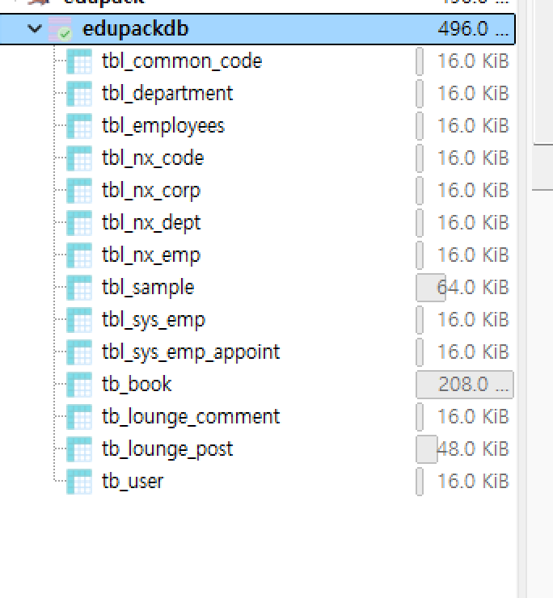
tb_user 테이블 실제 데이터
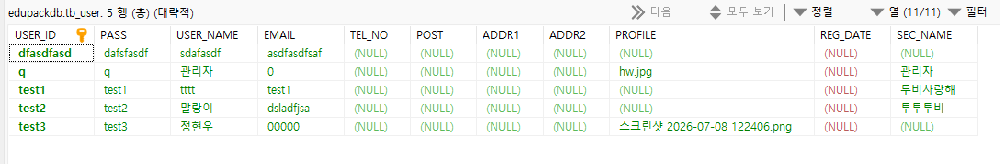
세 가지 개발 방식
모바일 애플리케이션은 크게 Native App, Mobile Web, Hybrid App 세 가지 방식으로 만들 수 있다. 네이티브 앱은 속도가 빠른 대신 유지보수가 어렵고, 모바일 웹은 속도가 느린 대신 유지보수가 좋다. 이 둘의 장점을 모아 만든 것이 하이브리드 앱이라, 개발 생산성과 유지보수를 동시에 해결할 수 있다.
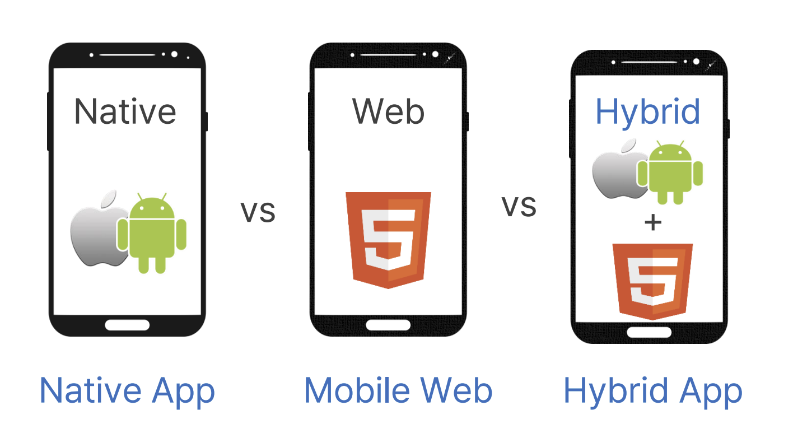
① Native App
OS가 제공하는 언어와 개발도구로 직접 만드는 방식이다. 안드로이드와 iOS가 언어·개발도구·패키지 형식·스토어까지 전부 다르기 때문에, 같은 앱이라도 양쪽을 따로 만들어야 한다.
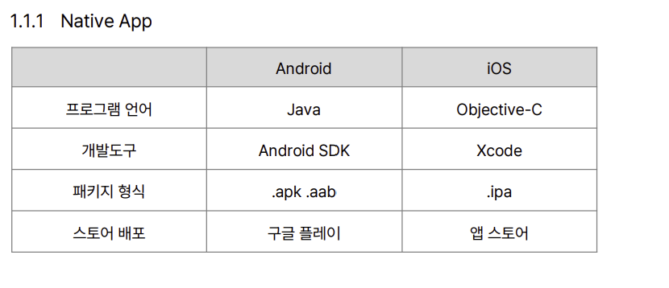
② Mobile Web
웹 기술로 개발하고 모바일 브라우저에서 실행하는 방식이다. 데스크톱 웹 페이지를 모바일 해상도로 줄여놓은 것으로 볼 수 있다. 웹 표준을 쓰므로 표준화된 개발이라는 장점이 있지만, 네이티브 앱보다 속도가 느리고 카메라 같은 디바이스 연동 기능을 쓸 수 없다.
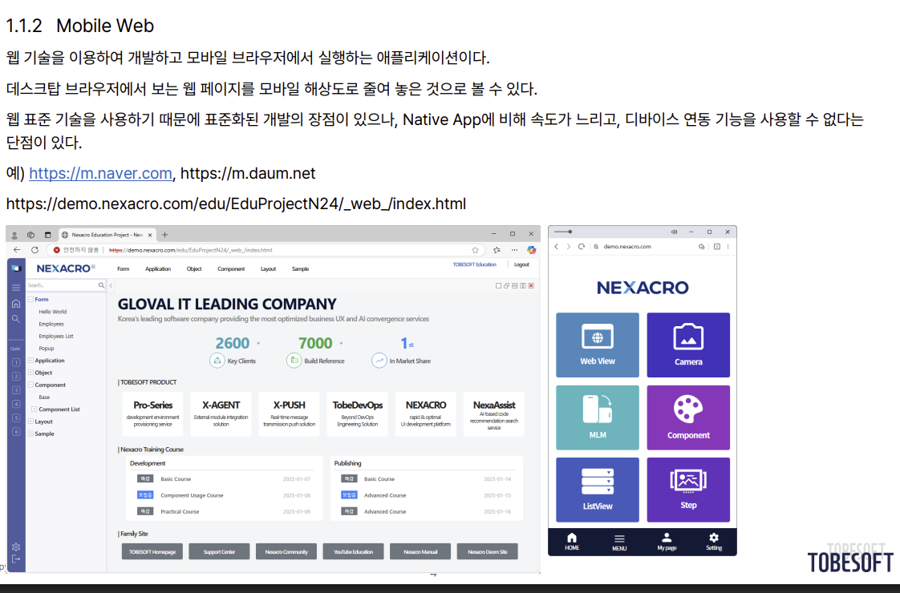
③ Hybrid App
모바일 웹과 네이티브 앱을 합친 형태다. 모바일 웹으로 먼저 개발한 뒤 크로스 프레임워크로 네이티브 앱으로 변환하는 방식이라, 처음부터 직접 만드는 게 아니라 이미 만들어진 것을 바꾸는 셈이다. 디바이스 연동과 앱 구동에 필요한 부분만 네이티브 언어를 쓰기 때문에 안드로이드 브라우저 파편화를 줄일 수 있고, OS별로 콘텐츠를 따로 만들 필요가 없어 개발·유지보수가 쉽다.
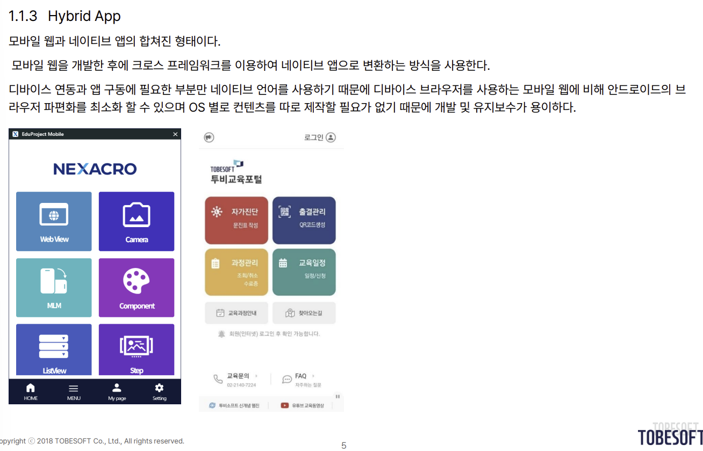
개발 방식 비교
구동속도·성능은 네이티브가, 제작 편의성·개발 가성비·업데이트 용이성은 모바일 웹이 앞선다. 하이브리드는 모든 항목에서 중간값을 가진다 — 속도가 정말 중요한 경우가 아니면 실무에서는 하이브리드를 많이 쓴다.
넥사크로는 어디에 속할까?
넥사크로는 모바일 웹과 하이브리드 앱 둘 다 가능하다. 모바일과 데스크톱의 개발 차이에서 가장 중요한 건 화면 크기로, 개발 방법 자체는 비슷하지만 UI가 가장 크게 달라진다. 모바일 웹으로 만들 경우 카메라·SNS 같은 디바이스 권한을 따로 열어주어야 한다.
모바일 퍼스트
웹 화면을 그대로 모바일로 옮기는 건 쉽지 않다. 그래서 모바일을 먼저 개발하는 "모바일 퍼스트"가 권장된다. 작은 화면에 우선 채울 것을 고민해 결정한 뒤, 화면이 커짐에 따라 채울 것을 전략적으로 설계하는 "채움의 미학"으로 접근한다.
반응형 웹 (Responsive)
CSS3 미디어쿼리를 이용해 스크린 크기에 따라 레이아웃 구성을 다르게 하는 방식. 하나의 소스·하나의 URL로 모든 기기에 대응하므로 제작·관리비가 저렴하고 검색 노출에도 유리하다. 다만 한 화면에 많은 콘텐츠를 넣는 문화에서는 구축이 복잡하고, 디바이스별 모든 페이지를 로드해 로딩이 길어질 수 있다.
넥사크로에서는 position 속성 설정으로 대응한다.
적응형 웹 (Adaptive)
정해진 몇 가지 화면 크기를 기준으로 두고 비율에 맞춰 페이지를 구성하는 방식. 해당 디바이스의 CSS·소스만 로드하므로 성능 이슈가 덜하고 그리드 형태 데이터의 가독성을 높일 수 있다. 다만 기기별로 페이지를 각각 제작해야 하고, 수정 사항이 생기면 나머지 페이지도 전부 고쳐야 해 유지보수가 불편하며 조금 부자연스러울 수 있다.
넥사크로에서는 MLM 기능으로 대응한다.
Nexacro N24는 position 속성과 MLM(Multi Layout Manager) 두 가지를 모두 제공하므로 반응형·적응형 둘 다 가능하다. 요즘은 반응형 웹이 많이 쓰인다.
실습 — 픽셀 단위 vs 퍼센트 단위
폼에 버튼을 올릴 때 크기·위치를 픽셀로 지정하면 창을 줄여도 리사이즈되지 않고(적응형 성격), 퍼센트로 지정하면 창 크기에 따라 같이 늘고 줄어든다(반응형 성격).
프로젝트 생성
데스크톱 프로젝트와 만드는 순서는 같고, 마법사에서 Screen을 Phone으로, Frame Template을 Full로 지정하는 점만 다르다. 그러면 화면 전체를 채우는 Form_Work 골격이 함께 생성된다.
테스트 — 에뮬레이터와 웹 브라우저
실행 대상에서 Nexacro Emulator를 고르면 모바일 테스트 전용 창이 뜬다. 화면을 자유롭게 바꿀 수 있어 세로 모드·가로 모드를 모두 확인할 수 있다.
웹 브라우저에서도 테스트할 수 있다. 크롬 개발자도구의 디바이스 목록에서 기종을 골라 실제 해상도로 확인하는 방식이다.
MLM (Multi Layout Manager) — 레이아웃 여러 개 만들기
Form 화면 상단의 [+] 버튼으로 레이아웃을 추가한다(예: 768 × 480). 레이아웃을 만들어두고 퀵뷰를 실행하면, 화면 사이즈를 조절할 때 그 크기에 맞는 레이아웃으로 자동 전환된다.
주의 — 추가된 레이아웃에서는 컴포넌트를 새로 선택·추가할 수 없다. 두 번째 레이아웃은 컴포넌트의 위치만 바꾸는 용도다.
Multi Screen — Application 추가
File > New > Application으로 Screen을 하나 더 추가하면(예: Desktop_screen) Environment > ScreenDefinition과 Application Information에 각각 등록된다. 컴포넌트의 screenid 속성으로 어느 스크린에서 보일지 지정할 수 있다.
screenid 속성 지정
Application 계층 구조
세로 모드에만 보이고 가로 모드엔 안 보이게 하려면
visible을 false로 — 다만 이렇게 하면 스크립트가 안 먹는 경우가 있어 비추천이다.
물리적으로 움직이기 — 마이너스 좌표값을 줘서 화면 밖으로 밀어내는 방식. 실무에서는 이쪽을 쓴다.
① Camera 오브젝트 추가
Invisible Object에 nexacro.Camera를 추가한다. Device API 목록에는 카메라 외에도 Contact(주소록), Geolocation(위치), ImagePicker, LiteDBConnection 같은 디바이스 연동 객체들이 함께 들어 있다.
② 속성 설정
gettype을 imagedata로 지정하면, 사진을 찍었을 때 파일 경로가 아니라 이미지 데이터 자체를 받아 바로 ImageViewer에 보여줄 수 있다. imagequality는 퍼센트 단위다.
③ 촬영과 결과 처리
버튼 클릭 시 takePicture()로 핸드폰 카메라 화면을 띄우고, 촬영이 끝나면 oncapture 이벤트에서 e.imagedata를 ImageViewer의 image 속성에 넣어준다.
배포는 Packing부터
메뉴 Deploy > Packing (Archive&Update)에서 대상 플랫폼(Web Browser·Windows·Android·iOS·macOS)을 고르고 패킹한다. 웹 브라우저용은 Sub Directory에 지정한 폴더로 결과가 떨어진다.
Archive와 버전
패킹 결과물은 .xzip 아카이브로 묶이고 버전이 매겨진다. 기본은 0버전이며, 외부 모듈일 경우에는 아카이브에서 빼준다.
App Builder가 해주는 일
모바일 앱 빌드·패키징·다운로드
스마트폰 설치를 위한 QRCode 링크 제공
nexacro Device API 모듈 관리 (User Library)
nexacro mobile library 관리
사용자 계정 관리
관리 콘솔 제공
App Builder에 로그인한 뒤 Target Project 추가 → Base Library 추가·상세 설정 → Android Permission 설정 → iOS 인증서 설정 → Build 순으로 진행하면 앱이 생성되고, QR 코드로 설치할 수 있다.
인하우스 테스트 — 보안 테스트를 거치지 않고 내부에서만 배포·확인하는 방식이다.
로컬 DB 활용 — 데이터가 잘 안 터지는 곳에서 쓰는 사용자를 위해, 입력값을 일단 로컬 DB에 저장해두었다가 나중에 한꺼번에 서버로 업로드하는 방식을 쓴다.
ListView Contents Editor
Grid가 표 형태라면 ListView는 모바일에 맞는 카드/목록 형태다. 컴포넌트를 우클릭해 Contents Editor를 열면 body 영역에 어떤 항목을 어떤 순서로 보여줄지 직접 편집할 수 있다.
Append Detail → Edit Detail
Contents Editor에서 Append Detail로 상세 영역을 추가한 뒤 Edit Detail로 내용을 편집하면, 목록 항목을 눌렀을 때 아래로 펼쳐지는 아코디언 형태로 만들 수 있다. 이렇게 하면 한 항목이 여러 줄로 표시된다.
Step
Step은 단계별 진행 화면을 만드는 모바일 전용 컴포넌트다. Add Layout으로 단계마다 레이아웃을 추가해 순서대로 넘기는 UI를 구성한다.
X-PUSH는 업무 시스템이 수시로 만들어내는 정보/메시지를, 이를 필요로 하는 사용자들에게 발생 시점에 실시간으로 전송하는 Push Server다. 바로 이 "발생 시점에 받는다"는 것이 푸시의 핵심 기술이다. 데스크톱과 모바일 환경을 모두 지원하며, Nexacro N의 NRE(Windows·iOS·Android)와 WRE에서 쓸 수 있다.
왜 필요한가 — 폴링 방식의 문제
폴링(Polling)은 클라이언트가 일정한 주기를 가지고 서버에 계속 요청해서 메시지를 가져오는 방식이다. 주기가 짧으면 서버 성능에 부담이 가고, 길면 정보의 적시성이 떨어진다. 푸시는 이 딜레마 자체를 없앤다.
그 밖에 비동기 메시지 수신이 필요한 경우, 배치 결과나 인스턴스 메시지처럼 모든 메시지를 기다리며 대기하고 싶지 않은 경우, 그리고 클라이언트가 오프라인일 때도 반드시 전달되어야 할 메시지가 있는 경우에 쓴다.
X-PUSH의 특징
단독 실행 (stand-alone) — WAS 같은 다른 프로그램에 연결되지 않고 독립적으로 실행된다.
연결지향형 서버 — 패킷 전송 전에 발신·착신 간 논리적 통신 경로를 미리 설정한 뒤 데이터를 보낸다.
신뢰성 메시지 전송 — 사용자가 오프라인이라 못 받으면 저장해 두었다가 온라인이 되면 자동 전송한다. Recovery 기능으로 DB 오류 시 메시지 유실도 방지한다.
모바일 알림(Notification) — 앱이 꺼져 있어도 FCM·APNS와 연동해 알림을 띄운다.
서버 확장 및 분산 구성 — 사용자 수에 맞춰 서버를 늘릴 수 있다.
최고의 성능 보장 — 실시간·신뢰성 전송 방식 양쪽 모두에서.
기본 설정은 사용자 5,000명 기준이다. 접속 건수가 5,000을 넘어가면 X-PUSH 기기를 여러 대 설치해 분산한다.
세 단계로 끝나는 작동 방식
X-PUSH Client(사용자)가 수신을 원하는 TOPIC을 서버에 등록(Subscribe)하고 메시지 수신 상태로 대기한다.
외부(Back End System)의 Message Provider가 'TOPIC + 메시지'를 생성해 X-PUSH 서버에 공급(Provide)한다.
X-PUSH 서버가 등록된 TOPIC에 매칭되는 메시지를 해당 사용자에게 전달(Push)한다.
모든 역할은 서버가 한다. 즉 X-PUSH가 전달을 해서 사용자 화면이 받는 구조이며, 이것이 곧 실시간 메시지 주고받기다.
시스템 구성과 포트
클라이언트는 실행 환경에 따라 서로 다른 포트로 붙고, WAS 쪽 Message Provider와 모니터링은 또 다른 포트를 쓴다. 방화벽을 열 때 아래 포트를 기준으로 확인한다.
| 포트 | 용도 |
|---|---|
| 50000 | WRE(HTML5) 클라이언트 접속 |
| 50001 | NRE(런타임) 클라이언트 접속 |
| 50002 | Provider — 서버에서 메시지를 보내줄 때 사용 |
| 50003 | 모니터링 — 서버가 보내는 것을 cmd에서 확인 |
| 50007 | 서버 간 정보 이동(분산 서버 구성, Inbound 설정 불필요) |
오프라인 형태일 때도 메시지를 남겨야 하므로 DB에 저장하도록 구성한다.
수신자에게 메시지를 전달하려면 공급자가 메시지 포맷을 먼저 정의해야 한다. 이때 쓰는 구조가 Topic으로, 메시지가 매칭되는 하나의 키 값을 가리킨다. 같은 Topic Key를 가진 수신자에게만 메시지가 전달된다.
Topic Type
메시지의 종류를 나타내는 일종의 그룹 키. 반드시 4byte(4자리)로 만들어야 한다 — 예: 0000, A001, NOTI
Topic Id
특정 타입의 메시지 중에서 다시 골라내기 위한 개별 키. 예를 들어 주식 알림이라면 Topic Type이 주식, Topic Id가 증권사 아이디가 되는 식이다.
메시지 사이즈 제약
Field Values는 실제로 전달하려는 내용이며, 하나의 메시지에 여러 개의 값을 만들 수 있다. 다만 구분자를 포함한 크기 제한이 있다.
① 실시간 메시지 — 지금 접속한 사람에게만
접속해서 토픽을 등록해 둔 클라이언트에게 바로 쏘는 방식이다. DB를 거치지 않으므로 빠르지만, 놓친 메시지는 재수신이 불가능하다.
② 신뢰성 메시지 — 못 받으면 다시 준다
메시지를 DB에 저장해두기 때문에 못 받은 건 재요청이 가능하다. 즉 테이블이 미리 만들어져 있어야 쓸 수 있다. Provider가 메시지를 보내면 서버가 T_TOPIC·T_USER_MESSAGE에 insert하고, 클라이언트가 받은 뒤 ackn(엔진 응답)과 responseMessage()(수신 확인)를 보내면 서버가 메시지 상태를 update한다.
사용자가 메시지를 보면 DB의 MESSAGE_STATE 값이 2가 되고, 안 보면 0으로 남는다. 모바일도 동작 방식은 비슷하다.
신뢰성 메시지가 쓰는 DB 테이블
| 테이블 | 역할 |
|---|---|
| T_TOPIC | 사용자의 topic 정보 |
| T_MESSAGE | 신뢰성 메시지 정보 |
| T_USER_MESSAGE | 사용자의 메시지 상태 관리 |
| T_MOBILE | 사용자의 Device Token 정보 |
| T_NOTIFICATION | Mobile notification 이력 관리 |
실습 — t_topic 테이블에 쌓인 실제 데이터
실습 — 수신 화면과 발송 화면
수신 화면에서는 프로젝트 아이디·프로토콜 버전과 접속 주소(tcp://localhost:50001, http://localhost:50000)를 확인한 뒤 xpush에 연결하고 토픽을 등록한다. 신뢰성 메시지를 쓸 때는 최초 한 번 사용자 등록을 해야 하며, 미수신 메시지 요청·개수 확인·디바이스 등록도 여기서 한다.
실시간 메시지 발송
신뢰성 메시지 발송
수신 콜백에서 두 방식을 구분하는 법
subscribe에 넘긴 콜백 함수로 메시지가 들어온다. 여섯 번째 인자 ActionType이 "PUSH"면 실시간, "RELI"면 신뢰성 메시지다. 신뢰성 메시지는 받은 것으로 끝이 아니라 sendResponse(MessageId)로 수신 확인을 되돌려줘야 서버가 "읽음"으로 처리한다.
this.fn_push_callback = function(Row, ChangeColumn, AllColumns, Type, ActionType, MessageId) { this.taLog.set_value("ActionType : " + ActionType + "\n" + "Row : " + Row + "\n" + "MessageId : " + MessageId + "\n\n" + this.dsMessage.saveXML()); if (ActionType == "PUSH") // 실시간 메시지 — 받고 끝 { } if (ActionType == "RELI") // 신뢰성 메시지 { this.XPush00.sendResponse(MessageId); // 수신 확인 메시지 전송 } };
오프라인이었다면 — 미수신 메시지 재요청
신뢰성 메시지는 DB에 남아 있으므로, 다시 접속했을 때 requestMessage(topicType, topicId)로 못 받은 메시지를 끌어올 수 있다. 개수만 확인하는 requestMessageCount()도 있지만 실무에서 쓸 일은 거의 없다.
모바일 앱은 항상 켜져 있을 수 없다. 그래서 앱이 background 상태일 때는 구글(Android)의 FCM과 애플(iOS)의 APNS를 거쳐 알림을 띄운다. 알림은 신뢰성 메시지 전송에 의해 발송되며, 사용자가 알림을 눌러 앱을 활성화하면 X-PUSH와 다시 연결(Runtime 50001)해서 미수신 메시지를 요청한다.
디바이스 토큰 등록
알림을 받으려면 어느 기기로 보낼지 서버가 알아야 한다. connect() → registerTopic()(UserID·Topic 등록) → registerDevice()(디바이스 토큰 등록) 순으로 진행하며, 각각 T_TOPIC에 insert된다. 최초 한 번 사용자 등록을 하면 DB에 저장되는 구조다.
클라이언트 쪽 코드는 한 줄이다. 디바이스 토큰 자체는 system.notificationtoken에 들어 있어 로그로 확인할 수 있다.
// 모바일에서만 사용하는 기능 this.btn_RGST_onclick = function(obj:nexacro.Button, e:nexacro.ClickEventInfo) { this.taLog.set_value("deviceID : [" + system.notificationtoken + "]"); this.XPush00.registerDevice(); };
등록 결과는 onsuccess의 e.action == 6으로 돌아온다. 이미 등록된 기기를 다시 등록하면 -1072가 뜨는데 이건 정상 오류라 무시해도 된다.
클라이언트가 여러 곳(Window)에서 접속되어 있는 경우 모바일 메시지는 전송하지 않는다 — 웹이 기준이며 내부 정책이라 선택할 수 없다.
디바이스 토큰과 알림 이력은 각각 T_MOBILE, T_NOTIFICATION 테이블에서 확인한다. 모바일의 provider는 백엔드다.
FCM을 쓰려면 google.com 회원가입 후 FCM API 서버 KEY와 발급자 ID를 생성해야 한다.
메시지를 보내는 쪽은 Provider API를, 받는 쪽은 X-PUSH Object(Client Adaptor)를 쓴다. 백엔드가 Provider API로 메시지를 만들어 X-PUSH에 넣으면, 클라이언트 어댑터가 그것을 Message Layout(XML) 기준으로 파싱해 Dataset에 담아준다.
Provider Java API — 메시지 공급 7단계
| 순서 | 메소드 | 설명 |
|---|---|---|
| 1. 연결 | connect | X-PUSH 서버에 접속하고 사용자 인증 |
| 2. 종류 설정 | setActionType | 신뢰성은 ACTION_RELI_STRING, 실시간은 ACTION_PUSH_STRING |
| 3. Topic 등록 | setTopicType setTopicId | topic type은 반드시 4byte. Topic Id로 메시지를 선별 |
| 4. 메시지 추가 | addData | 전달할 값을 추가 |
| 5. 저장시간 | setAvailablePeriod | 신뢰성 메시지의 유효기간(일 단위) |
| 6. 전송 | sendPushMessage | PushMessage 객체 하나를 서버에 전송 |
| 7. 해제 | close | X-PUSH 서버와 접속 해제(메시지 통신 종료) |
X-PUSH Object가 하는 일
수신된 메시지를 Message Layout(XML)을 참조해 해석한다.
다양한 방식(update·insert·append·replace)으로 Dataset에 처리한다.
처리된 Dataset을 그대로 업무 화면에 쓴다.
Message Layout — 필드 개수를 맞춰야 한다
X-PUSH 서버와 Nexacro N에 정의된 Topic Type 및 데이터 전달 개수는 동일해야 한다. 즉 Nexacro의 Message Layout 필드 개수에 맞춰 Provider가 메시지를 보내야 한다. 메시지 컬럼 순서에 따라 서버에서 보내는 값이 매핑되기 때문이다.
<!-- Nexacro N Message Layout --> <message type="1000"> <field id="TOPIC_ID" type="string" size="9" key="true"/> <field id="TOPIC_TYPE" type="string" size="255"/> <field id="CODE" type="string" size="255"/> <field id="MSG" type="string" size="255"/> </message>
// Provider (Java) pushMessage.setTopicType("NOTI"); pushMessage.setTopicId("ALL"); pushMessage.addData("data01"); pushMessage.addData("data02");
실습 준비 — XPush 컴포넌트와 XPushUrl 서비스 등록
X-PUSH를 쓰려면 먼저 nexacro.XPush 컴포넌트가 프로젝트에 설치돼 있어야 한다. nexacrolib 컴포넌트 목록에서 Push.json을 체크해 추가한다.
그 다음 Message Layout XML을 읽어올 경로를 TypeDefinition > Services에 등록한다. XML 소스를 넣을 것이므로 Type은 반드시 file로 지정한다.
등록한 경로에 실제 Message Layout 파일을 만든다. Topic Type 하나가 <message type=""> 하나에 대응하고, 그 안의 field 구성이 Provider가 보내는 값과 1:1로 맞아야 한다.
Form_onload — 실행 환경에 따라 layouturl 분기
클라이언트와 서버가 주고받을 메시지 경로(와 메시지 타입)를 화면 로드 시점에 설정한다. 모바일 Runtime(NRE)과 그 외 환경에서 경로 표기가 다르므로 분기한다.
this.Form_onload = function(obj:nexacro.Form, e:nexacro.LoadEventInfo) { // XPush Message 송/수신을 위한 Layout 세팅 if ((nexacro._OS == "Android" || nexacro._OS == "iOS") && (nexacro._Browser == "Runtime")) { this.XPush00.set_layouturl("%USERAPP%XPushUrl/XPush_Message_Layout.xml"); } else { this.XPush00.set_layouturl("XPushUrl::XPush_Message_Layout.xml"); } };
프로퍼티를 설정하는 두 가지 방법
this.Button00.text = "hello"; 처럼 직접 대입하는 방식은 N24에서 쓰고, this.Button00.set_text("hello"); 처럼 setter를 부르는 방식은 N21부터 써 온 방식이다. X-PUSH 설정도 마찬가지로 set_projectid()·set_protocolversion()·set_iplist() 형태로 건드린다.
연결·구독 — 클라이언트 스크립트
set_iplist()는 IP:PORT만 쓸 수도 있고 tcp://·tcps://·http://·https:// 프로토콜을 붙일 수도 있으며, 콤마로 여러 서버를 나열할 수 있다. connect()의 비밀번호 인자는 의미가 없다 — 연결 성공·실패는 리턴값이 아니라 이벤트로 온다.
// 연결 / 해제 this.XPush00.set_iplist(this.IpPort.value); // "tcp://172.10.12.24:10081, ..." this.XPush00.connect(this.loginUserID.value, "..."); // 비번은 의미없음 this.XPush00.disconnect(); // 해당 페이지를 꺼도 연결은 끊어진다 // 구독 / 구독 해제 — 메시지는 비동기라 "append"로 계속 쌓는다 this.XPush00.subscribe(topic_type, topic_id, this, this.dsMessage, "append", "fn_push_callback"); this.XPush00.unsubscribe(topic_type, topic_id, this, this.dsMessage, "append", "fn_push_callback"); // 사용자 등록 — 실시간 메시지와 달리 DB에 저장된다 var ret = this.XPush00.registerTopic(topic_type, topic_id); this.XPush00.unregisterTopic(topic_type, topic_id); // 미수신 메시지 (신뢰성) 재요청 / 개수 조회 this.XPush00.requestMessage(topic_type, topic_id); this.XPush00.requestMessageCount(topic_type, topic_id);
topic_id 자리에 "ALL"을 넣으면 해당 Topic Type 전체를 대상으로 한다. requestMessageCount()는 실무에서 쓸 일이 거의 없다.
이벤트 처리 — onsuccess / onerror의 e.action
모든 요청의 결과는 XPush00_onsuccess와 XPush00_onerror로 돌아온다. 어떤 요청의 결과인지는 e.action 값으로 구분한다.
| e.action | 대응 메소드 | 비고 |
|---|---|---|
| 0 | connect() | 접속 완료 — 보통 여기서 바로 subscribe를 건다 |
| 1 | disconnect() | 접속 해제 |
| 2 | subscribe() | 구독 등록 — 이어서 registerTopic을 호출 |
| 3 | unsubscribe() | 구독 해제 |
| 4 | requestMessage() | 미수신 메시지 요청 |
| 5 | sendResponse() | 신뢰성 메시지 수신 확인 전송 |
| 6 / 7 | registerDevice() unregisterDevice() | 모바일 디바이스 토큰 등록·해제 |
| 8 / 9 | registerUser() unregisterUser() | 유저 Topic 등록·해제 |
| 10 | requestMessageCount() | e.message.returnvalue 배열에 topictype·topicid·count가 담긴다 |
이 구조를 이용하면 화면 로드 후 연결 → 구독 → 사용자 등록 → 미수신 메시지 수신까지 이벤트 체인으로 자동화할 수 있다.
this.XPush00_onsuccess = function(obj:nexacro.XPush, e:nexacro.XPushEventInfo) { if (e.action == 0) { // connect 성공 → 구독 this.XPush00.subscribe("1000", "TOBEEDU01", this, nexacro.getApplication().gdsXPushMessage, "append", "fn_push_callback"); } if (e.action == 2) { // subscribe 성공 → 사용자 등록 this.XPush00.registerTopic("1000", "TOBEEDU01"); } if (e.action == 8) { // registerUser 성공 → 못 받은 메시지 요청 this.XPush00.requestMessage("1000", "TOBEEDU01"); } }; // 서버가 살아있는지 주기적으로 확인되는 이벤트 this.XPush00_onkeepalive = function(obj, e) { this.taLog.set_value("KEEP"); };
오류 코드 — e.statuscode
onerror에서 e.statuscode·e.errormsg·e.reason·e.serverip를 찍어 원인을 잡는다.
| 코드 | 의미 |
|---|---|
| -100 | Push 서버가 "Bye"를 보냈거나 규약에 따라 종료됨 (이때 e.action은 -1) |
| -101 | 타임아웃 처리됨 |
| -200 | Command Auth Error — 선택된 IP에 대한 인증 오류 |
| -201 | iplist에 등록된 Push 서버 접속이 모두 실패 |
| -202 | 데이터 전송 채널 인증(authentication) 오류 |
| -300 / -301 | 서버 접속 실패 / 패킷 전송(send·recv) 오류 |
| -302 | 이미 PUSH 서버에 접속되어 있음 |
| -401 | 접속 해제(disconnect) 요청 실패 |
| -501 / -601 | 메시지 수신 중단(suspend) / 재시작(resume) 요청 실패 |
| -701 | topic 등록·등록해제 요청 실패 |
| -801 | 메시지 포맷 버전 정보 불일치 |
| -901 / -902 | 신뢰성 메시지 수신응답 전송 실패 / 미수신 메시지 요청 실패 |
| -1001 | 모바일 DeviceToken 등록 요청 실패 |
| -1002 / -1003 | 유저 topic 등록(registerUser) / 등록해제(unregisterUser) 실패 |
| -1004 | 미수신 메시지 정보 요청 실패 |
| -1072 / -1092 | 정상 오류 — registerDevice / registerTopic 기등록(중복) 시 발생 |
메시지 발송 화면 — Provider를 서버로 호출
넥사크로 화면에서 메시지를 보낼 때는 X-PUSH에 직접 꽂지 않는다. 선택한 TOPIC들을 dsProvider에 담아 서버의 Provider JSP를 transaction으로 호출하고, 실제 X-PUSH 공급은 서버가 Provider API로 처리한다.
this.btnSend_onclick = function(obj:nexacro.Button, e:nexacro.ClickEventInfo) { if (!this.confirm("메시지를 전송하시겠습니까")) return; // 입력 검증 if (this.dsTopic.getCaseCount("Chk == '1'") == 0) { this.alert("대상 TOPIC를 1개 이상 선택해주세요."); return; } if (this.edCode.value == "") { this.edCode.setFocus(); return; } if (this.taMSG.text == "") { this.taMSG.setFocus(); return; } // 체크된 TOPIC만 골라 전송용 Dataset에 담는다 this.dsProvider.clearData(); for (var i = 0; i < this.dsTopic.getRowCount(); i++) { if (this.dsTopic.getColumn(i, "Chk") != "1") continue; this.dsProvider.addRow(); var r = this.dsProvider.rowposition; this.dsProvider.setColumn(r, "PROJECT_ID", this.edit_setprojectid.value); this.dsProvider.setColumn(r, "PUSH_TYPE", this.cmPushType.value); this.dsProvider.setColumn(r, "TOPIC_TYPE", this.cmTopicType.value); this.dsProvider.setColumn(r, "TOPIC_ID", this.dsTopic.getColumn(i, "TOPIC_ID")); this.dsProvider.setColumn(r, "CODE", this.edCode.value); this.dsProvider.setColumn(r, "MSG", this.taMSG.text); } // 서버의 Service_XPush.jsp 호출 this.transaction("SendMsg", "SvcURL::Service_XPush.jsp", "in_Provider=dsProvider:U", "", "argPUSH_TYPE=" + nexacro.wrapQuote(this.cmPushType.value) + " argPUSH_MSG=" + this.taMSG.text, "fn_callback"); }; this.fn_callback = function(svcid, ecd, emsg) { if (ecd >= 0) this.alert("메시지를 정상적으로 발송하였습니다."); else this.alert("메시지 전달실패 : " + emsg); };
TOPIC ID는 업무에서 알아볼 수 있는 값을 쓴다. 예를 들어 기지국 알림이라면 강남기지국 같은 식이다.
서버 운영 시 주의사항
• cmd 창 내부를 클릭하지 말 것 — 콘솔이 선택 모드로 들어가면서 서버가 멈춘 것처럼 보인다.
• 서버 기동은 set_start.bat, 종료는 정석대로 Ctrl + C로 한다.
• 윈도우 서비스로도 등록되어 있어 service_xpush를 더블클릭해 실행할 수 있다.
설치 전 확인사항
| OS | JAVA JDK 1.8 이상이 지원되는 모든 OS |
| JAVA | JDK 1.8 이상 |
| MEMORY | 최소 1024MB |
| HARD SPACE | 설치 공간 최소 512MB |
| DB | 신뢰성 데이터 처리를 위한 DB(Oracle, MSSQL, MySQL, Tibero, DB2, PPAS)와 X-PUSH 사용자 계정 |
| 방화벽 | 50000 / 50001 / 50002 / 50003 / 50007 |
패키지 구성과 라이선스
압축을 풀면 bin(실행/종료 스크립트) · conf(환경설정·라이선스) · doc · lib · log · sample 디렉토리가 나온다. 라이선스는 conf에 위치하며, 정식 라이선스에는 설치된 OS의 IP가 박혀 있다. 서버를 재기동하지 않고 교체할 수 있다.
xpush_config.xml — 포트와 DB 설정
서비스별로 바인드 주소와 포트를 지정한다. JDBC 드라이버 모듈은 DB 종류별로 따로 제공되지 않으므로 직접 넣어야 한다.
<!-- WRE(HTML5) 클라이언트 --> <service name="WebPublisher" ...> <attribute name="ServerBindAddress">0.0.0.0</attribute> <attribute name="Port">50000</attribute> </service> <!-- NRE(런타임) 클라이언트 --> <service name="RuntimePublisher" ...> Port 50001 <!-- 모니터링 --> <service name="PushMonitor" ...> Port 50003 <!-- 분산 서버 구성 (0.0.0.0 / 127.0.0.1 사용 금지) --> <service name="HazelcastService" ...> port 50007 <!-- JDBC --> <attribute name="connectUri">jdbc:h2:tcp://172.10.11.14/./test</attribute> <attribute name="jdbcClassName">org.h2.Driver</attribute>
log4j.xml — 로그 레벨과 위치
com.nexacro.xpush 로거의 level로 상세도를 조절하고, PATH 프로퍼티로 로그 디렉토리를 바꾼다.
| DEBUG | 서버 테스트나 오작동 파악용 정보 |
| TRACE | 동작의 세세한 부분을 살펴보기 위한 정보 |
| INFO | 서버의 동작 정보 |
| WARN | 무시할 수 있는 상황이나 exception 정보 |
| ERROR | 운영에 영향을 끼치는 에러 사항 |
로그를 보면 클라이언트 인증(action=AUTH), 토픽 구독(action=ADDF), Provider의 메시지 전송(action=RELI), 클라이언트로의 최종 전달(pushed to client)까지 단계별로 확인할 수 있다.
모니터링
별도 UI 없이 콘솔 환경에서 확인한다.
C:\xpush-3.0.2\bin\show_status.bat localhost 1083 tobesoft xpush
사용자가 넥사크로로 개발된 앱을 쓰려면 사용 환경에 맞는 실행 환경을 만들어주고 필요한 파일을 받아야 하는데, 이 과정을 배포라고 한다.
"자세한 사용법"의 회색 실행 환경과 배포 항목이 개발 중 실행(Generate·Local Web Server·QuickView)을 다룬다면, 여기서는 실제 사용자에게 내보내는 운영 배포를 다룬다.
WRE와 NRE의 차이
WRE(Web Runtime Environment)는 이미 설치된 웹 브라우저에서 실행하므로 웹 서버에서 HTML·JS·CSS만 내려받아 바로 실행된다. 반면 NRE(Nexacro Runtime Environment)는 별도의 배포·설치 과정이 반드시 필요하다.
| 분류 | 설명 | NRE | WRE |
|---|---|---|---|
| 엔진모듈 | 스크립트·메모리·렌더링 처리, 런타임 엔진 | O | X |
| 배포파일 | 프레임워크, 컴포넌트 라이브러리(자바스크립트) | O | X |
| 개발소스 | Generate에서 변환된 코드(자바스크립트, CSS) | O | X |
용어 정리
런처 서비스 — 윈도우 서비스로 동작하면서 지정한 넥사크로 엔진을 통해 앱을 실행한다. 단축 아이콘 생성이나 설치 리소스 배포도 처리할 수 있다.
넥사크로 엔진 — 윈도우에서 넥사크로 앱을 실행하기 위한 실행환경 파일. OS에 따라 32비트/64비트 모듈을 설치한다.
WRE 배포 = Packing 후 웹 서버에 Deploy
WRE 환경에서는 별도의 배포 작업이 필요 없고, 애플리케이션을 Packing해서 웹 서버에 올리기만 하면 된다. Deploy > Packing (Archive&Update)에서 왼쪽 Web Browser를 선택해 진행한다.
Packing 옵션 — Merge와 Compress
Packing 창 왼쪽 하단 또는 Options 창에서 Deploy 옵션을 설정한다.
Merge
넥사크로 자바스크립트 라이브러리 파일을 하나로 묶어 단순화한다. 미적용하면 index.html에 Framework.js·CompBase.js·Grid.js·ListView.js·Push.js 등 script 태그가 수십 개 나열되지만, 적용하면 통합된 파일 몇 개로 줄어 요청 수가 크게 감소한다.
Compress (코드 난독화)
공백·주석을 제거하고(Compress JS file), 변수명을 의미 없는 이름으로 바꾼다(Code Obfuscation). 단 eval이 들어 있는 함수는 난독화되지 않는다 — 이를 무시하고 강제 난독화하는 옵션도 있지만 권장되지 않는다.
원본과 소스는 분리된다 — Generate → Packing
넥사크로는 원본소스와 실행 소스가 분리돼 있다. 개발자가 만지는 것은 .xfdl 원본이고, Generate를 돌리면 웹이 읽을 수 있는 .xfdl.js가 만들어진다.
Generate Path는 프로젝트 설정에서 지정한다. Generate 경로와 Deploy 경로를 같은 경로나 하위 경로로 잡으면 프로젝트가 정상 동작하지 않을 수 있으니 반드시 분리한다.
그런데 Generate만으로는 부족하다 — 패킹이 하는 일
Generate된 js를 그대로 올리면 안 되고 Packing을 한 번 더 거쳐야 한다. 패킹하면 이름은 같은 js 파일이 다시 만들어지는데, 메모장으로 열어보면 내용이 다르다 — 공백을 걷어내고 난독화를 해서 HTML 소스코드가 그대로 보이지 않게 만든 것이다. 요청 수도 줄어들어 속도가 빨라진다. HTML 소스를 일일이 내려받을 필요가 없기 때문이다.
패킹 결과는 _web_ 폴더에 떨어진다. 사용자가 실제로 접속하는 곳이 바로 이 _web_이다.
패킹 결과 폴더 구조
Packing 완료 로그
넥사크로 라이브러리(nexacrolib) 안에도 여러 개의 js가 들어 있고, 이것들 역시 Merge·Compress 대상이다. WRE는 여기까지, 즉 패킹만 하면 끝난다.
CacheLevel — 파일을 언제 다시 받게 할 것인가
서비스마다 캐시 정책을 정할 수 있다. TypeDefinition > Services의 CacheLevel 컬럼에서 지정한다.
| 종류 | 설명 |
|---|---|
| None | 캐시를 쓰지 않고 매번 서버에서 받는다. 주로 Dataset 관련 통신에 쓴다. |
| Dynamic [기본값] | 서버 파일이 갱신됐을 때만 받고, 아니면 로컬 캐시를 재사용한다. 초기·불안정한 단계에서 쓴다. |
| Session | 엔진을 기동할 때 한 번만 받고, 엔진이 종료될 때까지 로컬 캐시만 쓴다. 운영에서 안정권에 들어섰을 때 쓰는 값. |
| Static | 한 번 받은 파일은 엔진을 재실행해도 로컬 캐시만 쓴다(TypeDefinition의 서비스 그룹 버전이 바뀌면 다시 받음). NRE에서만 동작하고 WAR로는 안 되며, 국내는 네트워크가 좋아 잘 쓰지 않는다. |
CheckVersion — 캐시를 새로 받게 만드는 스위치
Environment의 checkversion은 요청 URL 뒤에 쿼리 스트링(버전 숫자)을 붙일지 말지를 정한다.
false — 숫자가 안 붙는다
한 번 캐시로 받으면 그 뒤로는 더 받지 않는다. 갱신하려면 F12로 캐시를 직접 지워야 한다.
true — 뒤에 숫자가 붙는다
숫자가 바뀌면 캐시를 새로 받는다. 즉 유저 서비스를 고쳤을 때 버전만 올려주면 배포가 반영된다.
WRE 운영 환경에서 버전을 지정하는 위치는 세 군데다.
배포는 파일 단위가 아니라 폴더(서비스) 단위로 진행된다는 점을 함께 기억해 둘 것.
NRE는 사용자 PC에 실행 환경을 설치해야 하므로 WRE보다 챙길 것이 많다. 엔진 모듈, 배포 파일, 개발 소스가 모두 사용자 PC로 내려간다. 다르게 말하면 배포라는 작업 자체가 NRE 실행환경일 때 하는 일이다.
배포 순서 — 사용자가 직접 설치하게 만든다
다운로드 링크 → 배포 사이트 접속 → 런처와 엔진 설치 → 설치가 끝나면 웹 브라우저가 아니라 넥사크로 전용 브라우저가 뜨는 흐름이다. 설치는 사용자가 선택하도록 만들어야 하고 바로 설치되게 할 수는 없다.
실제 배포 사이트는 전용브라우저와 html5 중 무엇으로 실행할지 고르게 해 주고, 필요한 프로그램이 깔려 있는지 확인한다.
Build App — 설치 파일 만들기
사용자 PC에 내려갈 것은 ① 클라이언트 파일과 ② 넥사크로 엔진·런처다. 수동설치 파일도 함께 준비해 둔다. 배포용 exe 파일에는 디지털 서명을 반드시 포함해야 한다.
기본 넥사크로 엔진은 변경 없이 그대로 쓰지만, 설치 리소스나 앱 설치 파일을 쓰는 경우에는 Engine Setup Key와 설치 경로를 따로 지정할 수 있다.
외부 모듈 체크 — 32비트/64비트 분기
외부 DLL을 쓰는 경우 엔진이 32비트인지 64비트인지에 따라 다른 파일을 지정해야 한다. system.navigatorfullname으로 판별한다.
var navigatorFullName = system.navigatorfullname; if ( navigatorFullName === "Nexacro N Engine (x86)" ) { this.objExtURL = "C:\\Temp\\ExtCommonV_N\\ExtCommonV_N_32.dll"; } else if ( navigatorFullName === "Nexacro N Engine (x64)" ) { this.objExtURL = "C:\\Temp\\ExtCommonV_N\\ExtCommonV_N_64.dll"; } else { alert("Not Nexacro Runtime!!! Only Runtime !!!"); }
Web Browser 버전 설정
WebBrowser 컴포넌트가 쓸 브라우저 버전은 Options > Update Browser에서 설정하거나, 레지스트리(extCommon.dll)를 직접 변경한다.
# 32비트 HKEY_LOCAL_MACHINE\SOFTWARE\Microsoft\Internet Explorer\MAIN\ FeatureControl\FEATURE_BROWSER_EMULATION # 64비트 HKEY_LOCAL_MACHINE\SOFTWARE\Wow6432Node\Microsoft\Internet Explorer\MAIN\ FeatureControl\FEATURE_BROWSER_EMULATION
CLSID — 한 번 만들면 바꾸지 말 것
NRE 배포 환경에서는 디렉토리 분리를 위해 새로운 CLSID를 사용한다. CLSID는 한 번 생성한 뒤 동일한 ID를 유지해야 업데이트가 가능하므로, 이후 변경되지 않도록 각별히 주의해야 한다.
Launcher
Launcher 서비스는 윈도우 서비스에 등록되어 동작하므로 등록 시 관리자 권한이 필요하다. 웹 브라우저가 Launcher와 통신할 때 데이터는 JSON 형식으로 주고받으며, Launcher에서 쓰는 변수는 대소문자를 구분하므로 주의한다.
고객 대응
NRE는 사용자 PC에 프로그램을 설치하는 방식이라, PC 환경과 권한 설정에 따라 설치 오류가 발생할 수 있다. 대응 CASE를 미리 작성해 사용자가 스스로 처리할 수 있도록 수동설치 파일과 안내 페이지를 준비해 두고, 1차 대응으로 해결되지 않으면 투비소프트 고객지원센터를 통해 지원받는다.
그래서 NRE와 WRE 중 무엇을 쓰나
로컬 DB를 쓰는 기능이나 데이터를 대용량으로 가져오는 경우에는 NRE를 쓴다. 그 외에는 실무에서 WRE를 훨씬 더 많이 쓴다.
운영 단계 주의사항
배포가 끝났다고 끝이 아니다. 오픈 시점에 오류가 가장 많이 터진다. 아래는 운영에 들어가기 전에 알고 있어야 할 것들이다.
제너레이트는 되돌릴 수 없다 — 넥사크로도 자바처럼 제너레이트된 소스만 있으면 원본 소스 없이 돌아간다. 다만 한 번 제너레이트된 소스를 원본으로 되돌릴 수는 없으므로, 수정은 반드시 원본을 고치고 다시 제너레이트하는 순서로 한다.
SPA라서 앞으로/뒤로 가기가 안 된다 — 넥사크로는 Single Page Application이고 엔진이 화면 전환에 관여하기 때문에 브라우저의 History가 동작하지 않는다. 일반 사용자에게는 불편할 수 있으므로, 화면이 바뀔 때마다 URL 주소를 함께 바꿔주면 앞으로/뒤로 가기를 쓸 수 있다.
개인화 저장 위치 — 로컬 스토리지에 저장하면 브라우저가 바뀌었을 때 공유되지 않는다. 기기·브라우저를 넘나들어야 하는 설정이라면 서버 DB에 저장해야 한다.
서버 타임아웃 — 일정 시간이 지나면 서버가 기록을 지운다. 인터넷뱅킹 로그인 시간이 만료되는 것과 같은 동작이라, 화면에서도 만료를 전제로 처리해야 한다.
막히면 넥사크로 화면에서 F1을 누르면 도움말이 열린다.
보안 — eval은 절대 쓰지 않는다
eval은 보안 코드 점검에서 바로 걸리는 메소드다. 게다가 eval이 들어 있는 함수는 패킹 시 난독화도 되지 않는다. 문자열로 객체나 함수를 찾아야 한다면 아래 방법을 쓴다.
// 오브젝트화 — 이름(문자열)으로 객체 찾기 var objGrid = this.all[sObjectId]; // 전부 var objGrid = this.components[sObjectId]; // 화면에 보이는 것 (visible) var objDs = this.objects[sObjectId]; // 안 보이는 것 (invisible, Dataset 등) // 이름으로 함수 호출 this[fn_ID].call(null, 1, 2); this.lookup(fn_ID).apply(null, [1, 2]); // 절대 eval을 쓰면 안 된다!
통신 구간 암호화
넥사크로의 데이터 통신 방식은 네 가지가 있는데 기본적으로 암호화되어 있지 않다. 통신 암호화 기능은 별도 제품을 구입해야 쓸 수 있다.
간단하게는 http를 https로 바꾸면 보안 프로토콜로 전환된다. 다만 서버가 암호화하는 시간이 더 들어 속도는 느려지고, https라고 해서 완전히 막아주는 것도 아니다.
투비소프트와 넥사크로
투비소프트는 기업용 업무 화면(UI) 솔루션을 만드는 회사이고, 넥사크로는 그 화면을 만드는 개발 도구다. IDE인 NEXACRO Studio로 화면을 만들면 .xfdl 파일이 생성된다.
프로젝트 생성 절차
New로 새 프로젝트를 만들 때 이름/경로, 대상 디바이스, 초기 화면 구성을 순서대로 지정한다. 생성되는 프로젝트에는 Environment, TypeDefinition(Objects·Services), Application Information 같은 설정 항목이 기본으로 함께 만들어진다.
Project Explorer vs Resource Explorer
Project Explorer는 환경설정·컴포넌트 정보·서비스 경로 같은 프로젝트 구조를 담고, Resource Explorer는 Theme 등 디자인 리소스를 담는다. Form에 컴포넌트를 추가하면 관련 디자인 요소가 자동으로 Resource Explorer에 반영된다.
외부 Theme 폴더 가져오기
Resource Explorer에서 "Open Theme Folder"로 실제 저장 경로를 연 뒤 폴더를 복사해 넣는다. 주의: 외부에서 직접 복사한 파일은 자동 인식되지 않으므로 반드시 Refresh를 해줘야 프로젝트에 반영된다.
외부 화면 폴더 가져오기
CompGuide 같은 외부 폼 폴더는 단순히 복사만 해서는 인식되지 않는다. TypeDefinition의 Services에 이름·경로·타입(form)을 등록해야 그 폴더의 화면을 실제로 쓸 수 있다.
Nexacro N Reference Guide
Help 메뉴의 이 도움말에서 컴포넌트별 속성·메소드·이벤트뿐 아니라 내부 구조(Control Map)까지 확인할 수 있어, 세부 스타일을 지정하기 전에 어떤 하위 요소가 있는지 미리 파악하기 좋다.
mainframe 크기 설정
Application Information의 mainframe 속성에서 전체 창의 width/height, 정렬 방식을 설정한다. 이 값은 Modaless 팝업을 화면 정중앙에 계산해 띄울 때 기준으로 쓰인다.
.xjs/.xfdl과 Generate
.xjs 파일은 실제로는 XML 안에 스크립트를 담은 형식이다. 브라우저에서 실행하려면 Generate 과정을 거쳐 xfdl/xjs를 실제 js 파일로 변환해야 한다.
Local Web Server의 한계
스튜디오 내장 Local Web Server는 실제 백엔드에 연결되어 있지 않아 화면·레이아웃 확인용으로만 적합하다. 서버 데이터 연동까지 확인하려면 실제 Web Server(Tomcat 등)로 실행해야 한다.
webapp 폴더와 Generate Path
Java 웹 프로젝트의 src/main/webapp이 실제 웹 주소의 루트가 된다. Generate Path를 이 webapp 하위 경로로 맞춰두면 변환된 결과물이 곧바로 서버가 읽을 수 있는 위치에 생성된다.
QuickView로 실서버 테스트
Run Environment를 Web Server로 바꾸고 실제 톰캣 주소를 지정하면, Generate된 결과물이 진짜 서버를 통해 로드되어 데이터 조회·수정까지 정상 테스트할 수 있다.
Application 추가와 Frame Template
Application Information에서 새 Application을 추가할 때 Frame Template을 "Full"로 두면 화면 전체를 채우는 기본 골격(Form_Work.xfdl)이 자동 생성되어, 매번 빈 화면부터 짤 필요가 없다.
전역 Dataset과 화면 계층 설계
로그인 정보처럼 앱 전체가 공유할 데이터는 전역 Dataset(gdsUser 등)에 두고, 하나의 뼈대 화면 안에서 상황에 따라 필요한 하위 화면(로그인/회원가입 등)만 바꿔 끼우는 구조로 설계하면 화면 간 연결을 이해하기 쉬워진다.
MDI 프레임 구조 요약
frameTop(상단 메뉴)·frameLeft(좌측 메뉴)·frameMdi(탭 관리)·frameWork(업무 화면 공통 틀)이 서로 맞물려 하나의 MDI 애플리케이션 골격을 이룬다. 각 프레임의 자세한 구현은 "넥사크로 소개" 쪽 Frame 구조 항목을 함께 참고하면 좋다.
넥사크로 프로젝트 동영상
실습으로 만든 넥사크로 프로젝트의 실행 화면 녹화본
용량이 약 18MB라 재생 시작까지 잠깐 걸릴 수 있습니다. 모바일 데이터 환경에서는 Wi-Fi 연결을 권장합니다.
영상에 나오는 실습 프로젝트의 원본 소스다. 메인 화면 sdiMain.xfdl에서 출발해 팝업과 서비스 호출을 따라가며 실제로 연결된 파일만 추렸다.
프로젝트 파일/ ├── 01_화면_xfdl/ · 화면 정의 16개 + 프로젝트 설정 4개 ├── 02_서버_자바/ · 서버 컨트롤러 1개 └── 03_테이블_sql/ · 테이블 DDL 5개
화면 — 01_화면_xfdl/
진입 화면에서 로그인·회원가입을 거쳐 업무화면과 라운지로 갈라지고, 거기서 다시 게시글·댓글·도서 화면으로 이어진다.
sdiMain → 로그인 / 회원가입 → 업무화면 · 라운지 → 게시글 · 댓글 · 도서
| 폴더 | 파일 | 역할 |
|---|---|---|
| FrameBase/ | sdiMain.xfdl | 진입 화면. AI 채팅창, 회사·고객지원 바로가기, 업무·라운지 이동 |
| sdiOnLogin.xfdl | 업무·라운지 진입 시 뜨는 로그인 팝업 | |
| User_bookSub.xfdl | 도서 목록 서브 화면 | |
| User/ | User_Login.xfdl | 첫 진입 인트로 팝업 |
| User_SignUp.xfdl | 회원가입 — 아이디 중복확인, 프로필 이미지 업로드 | |
| User_WorkPage.xfdl | 업무 화면 — 회원 목록, 공지 목록 | |
| User_NoticeWrite.xfdl User_seeNotice.xfdl | 공지 작성 / 상세 | |
| User_LoungeNick.xfdl | 라운지 첫 이용 시 익명 닉네임 설정 | |
| User_lounge.xfdl | 라운지 메인 — 게시글 목록 | |
| User_LoungePost.xfdl User_lounge_back.xfdl | 게시글 작성 / 상세 · 댓글 · 좋아요 | |
| User_launge_mypage.xfdl | 내가 쓴 글 / 댓글 | |
| User_book.xfdl User_book_info.xfdl | 도서 목록 / 상세 | |
| Cmm/ | CmmPaging.xfdl | 공통 페이징 컴포넌트 |
여기에 프로젝트 설정 파일 4개가 함께 들어 있다 — 0708.xprj(프로젝트), Application_Desktop_SDI.xadl(진입점으로 sdiMain 지정), typedefinition.xml(서비스 prefix), environment.xml(테마 theme_edu).
화면이 부르는 서비스는 22개
전부 SvcUrl:: 별칭으로 호출한다. 회원 6개(login·signUp·checkUserId 등), 라운지 8개, 공지 3개, 도서 3개, AI 채팅 1개, 파일 업로드 1개다. SvcUrl은 typedefinition.xml에서 실제 서버 주소로 잡혀 있어, 환경이 바뀌면 이 한 곳만 고치면 된다.
자바 서버 — 02_서버_자바/
EduFileController.java — 회원가입 프로필 이미지처럼 파일을 다루는 컨트롤러다. 약 530줄이며 DB에는 접근하지 않고 파일시스템만 쓴다.
| 매핑 | 메서드 | 하는 일 |
|---|---|---|
| /uploadFile.do | uploadFiles | MultipartRequest로 받아 저장하고, 파일 정보를 Dataset으로 응답 |
| /selectFiles.do | selectFiles | 저장된 파일 목록 조회 |
| /downloadFile.do | downloadFile | 파일 내려받기 |
| /deleteFile.do | deleteFile | 파일 삭제 |
Spring 설정 XML은 DB 접속정보가 들어 있어 저장소에 올리지 않았다.
이 구조가 어떻게 동작하는지는 "자세한 사용법" 탭의 서버 측 처리 구조(Controller·Service·Mapper)와 실전 연동 패턴 항목에서 다룬다.
테이블 — 03_테이블_sql/
sdiMain_tables.sql — mysqldump --no-data로 뽑은 구조(DDL)만 담았고 실제 데이터는 들어 있지 않다.
| 테이블 | 주요 컬럼 | 쓰이는 화면 |
|---|---|---|
| tb_user | USER_ID(PK), PASS, USER_NAME, EMAIL, PROFILE, SEC_NAME | 로그인, 회원가입, 닉네임, 업무화면 |
| tb_notice | NOTICE_ID(PK), USER_ID, TITLE, CONTENT | 공지 목록·작성·상세 |
| tb_lounge_post | POST_ID(PK), BOARD_TYPE, SEC_NAME, LIKE_CNT, VIEW_CNT | 라운지 목록·작성·상세 |
| tb_lounge_comment | COMMENT_ID(PK), POST_ID, SEC_NAME, CONTENT | 댓글 |
| tb_book | ISBN, TITLE, AUTHORS, PRICE, THUMBNAIL | 도서 목록·상세 |
tb_user.SEC_NAME은 라운지에서 쓰는 익명 닉네임이라, 값이 비어 있으면 User_LoungeNick.xfdl 팝업이 먼저 뜬다.
파일은 여기에 있습니다
위 파일 전부를 GitHub 저장소의 프로젝트 파일/ 폴더에서 바로 열어볼 수 있습니다.
github.com/iamcode04/Nexacro-project → 프로젝트 파일/